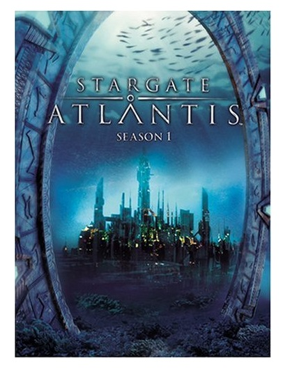
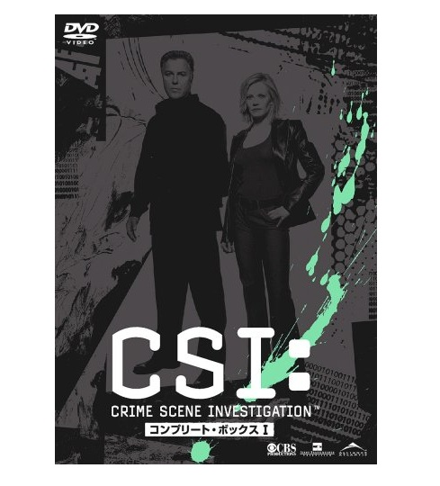

| ベストセラー100 アメリカのTVドラマ | |
| Amazon.co.jp | |
| Amazon.co.jp (2014) | |
Amazon.co.jpは2000年11月1日に書籍のオンライン販売を開始し、映像関連では翌年2001年6月13日にDVD、ビデオの販売をスタートしました。その後、HD DVDやブルーレイなどの販売を開始し、12年以上にわたりお客様に商品をお届けしてきました。
2001年から2013年の12年間で蓄積した販売データ、カスタマーレビューをはじめとする各種データをもとに、Amazon.co.jp独自の方法で、「ベストセラー100」をアメリカのTVドラマジャンルより選定しました。
このKindle版小冊子には、選定されたアメリカのTVドラマの内容紹介と「参考になったカスタマーレビュー」の一部（2014年4月時点）を掲載しています。
アメリカのTVドラマのガイド本として、手元におけるよう、電子書籍という形で刊行しました。新たなTVドラマとの出会いや、懐かしのTVドラマを思い出すきっかけとして、ご活用いただければ幸いです。
2014年7月吉日
Amazon.co.jp
海外ドラマ評論家 池田敏
無数の海外ドラマ、特に米英の作品がたくさん上陸している現在、「ベストセラー100 アメリカのＴＶドラマ」は、まさに"海外ドラマ入門"というべき好セレクションだ。
日本人の感性に寄せた日本のTVドラマも悪くはないが、ジャンルの多様さ、スケールの大きさ、多人種からなる人間群像の予測不能ぶりなど、世界を相手に勝負しているアメリカのTVドラマには、はまるとやめられなくなる味わいがある。ヒットすると何シーズンも続き、キャラが深みを増し、人間関係がより劇的に進展するのも日本のドラマにない魅力だ。
海外ドラマをまったく知らない人が、お気に入りのアメリカのTVドラマを見つけるには、まずは日本でも"海外ドラマ四天王"と呼ばれて大ヒットした『24 --TWENTY FOUR-』、『LOST』、『プリズン・ブレイク』、『HEROES/ヒーローズ』あたりを見てみるといいし、女性なら『Sex and the City』、『ゴシップガール』のおしゃれさに、きっとため息が出る。
気に入ったドラマの情報をネットで調べるうち、各ドラマの作り手が他にどんな作品を手がけたか、本国でどのチャンネルで放送されたかまで気になるようになれば、面白いドラマは他にも次々と見つかる、絶対に！
池田敏 プロフィール
1967年東京生まれ。早稲田大学政治経済学部卒。在学中から海外ドラマや映画に関する執筆活動を開始。著書は「NHKテレビ版 ドクター・クイン―大西部の女医物語」(求龍堂)ほか。「月刊SCREEN」「映画秘宝」など映画誌・TV情報誌、「映画秘宝EX映画の必修科目」シリーズ(洋泉社)などのムックに寄稿し、「これが面白い！ 海外テレビドラマ ベスト・テン2011-2012 (キネマ旬報ムック)」(キネマ旬報社)では監修を担当した。WOWOW「アカデミー賞授賞式」の中継でアドバイザーを務め続け、ニコニコ生放送「WOWOWぷらすと」に不定期出演。最近ではBS、CS各局のサイトに寄稿することが増えている。
・選定におけるデータは、2001年から2013年で集計しています。
・各作品は、シリーズ全巻の各種データをもとに選定しています。
・カスタマーレビューの数、平均のカスタマーレビューの星の数、「参考になったカスタマーレビュー」の選定は、2014年4月時点のものです。
・本書に記載している発売日は、対象のTVドラマが初めて発売された日付です。現在、発売・流通していない商品もありますが、廉価版など代替商品でお求めいただけます。（一部の商品を除く）
・本書に記載している販売元は、現在の販売元です。
・「参考になったカスタマーレビュー」の日付は、カスタマーレビューが書かれた日付です。またサイトに掲載された原文を抜粋しています。
・カスタマーレビューは、いずれかの巻の「参考になったカスタマーレビュー」を選定しています。
・シリーズのカスタマーレビュー数はすべての巻の合計、星の数は平均を掲載しています。
・
のアイコンをタップすると、対象のTVドラマの商品一覧（Amazon.co.jp検索結果）へとびます。
※iPhone、iPod Touch、iPad用のKindleアプリからは、アプリ内にあるAmazon.co.jpサイトへのリンクをご利用いただけません。「この操作は現在対応していません。」というメッセージが表示される旨、ご了承ください。
画像をダブルタップで拡大
24 -TWENTY FOUR-
キーファー・サザーランド
 20世紀フォックス・ホーム・エンターテイメント・ジャパン
20世紀フォックス・ホーム・エンターテイメント・ジャパン
2003/11/01

 (1576)
(1576)
CTU(テロ対策ユニット)捜査官、ジャック・バウアーの活躍を描いたサスペンス・アクション。大統領候補暗殺事件を軸に、1日=24時間に起こった事件を1話60分の24話構成で描く。現実の時間とリアルタイムで進行するため、従来の型を破ったTVシリーズとして話題になった。1stシーズンでは、エミー賞ノミネートはじめ、ゴールデン・グローブ賞主演男優賞を受賞。
レビュー対象商品
：24 -TWENTY FOUR- シーズン1 DVDコレクターズ・ボックス [DVD]
DW
2005/10/16
至上最高レベルの連続ドラマ
1話完結ではないですし、脚本が秀逸で視聴者を強烈に惹きつけてしまうため、観ていくうちに、気が付けば最終話で睡眠不足。という現象が起こるでしょう。監督の話によれば『24』シリーズは脚本決定→撮影→次の話の脚本決定→撮影、とその場その場で詳細なストーリーが決定されていくので、出演者さえいつクビになるか分からず、ドキドキしていたそうです。その成果か、毎話毎話が非常に濃厚で観ている方もクタクタになります。
画像をダブルタップで拡大
ナイトライダー
デイヴィッド・ハッセルホフ
NBCユニバーサル・エンターテイメントジャパン
2003/11/27
(342)
1980年代に一世を風靡した、傑作カーアクション・シリーズ。重傷を負った秘密捜査官マイケルは、死期が迫った大富豪から整形手術による新しい顔と、人工知能K.I.T.T.を搭載したスーパーカー「ナイト2000」を与えられ、正義の騎士となって世の中の巨悪に立ち向かう。銃弾を弾き、ロケットブースターを噴射してジャンプするハイテク装備満載の「ナイト2000」は、男性視聴者の心を釘付けにした。
レビュー対象商品
：ザ・ベスト・オブ・ナイトライダー [DVD]
カスタマー
2003/11/29
「マイケル...。ありがとう」
当時中学生だった私がTVの前にくぎ付けだった、マイケルとKITTのナイスなコンビが今再びよみがえりました。マイケルの"いちかばちか的な性格"やKITTの"人間よりも人間らしい優しさ"。今思うと、自分が成長していく過程で、知らない間に勇気やユーモア、相手に対する思いやりを、このドラマ1話1話からもらっていたのかもしれません。車が好き、嫌いにかかわらず、またいろいろな世代の人に見てもらいたい作品です。
画像をダブルタップで拡大
冒険野郎マクガイバー
リチャード・ディーン・アンダーソン
パラマウント ホーム エンタテインメント ジャパン
2005/11/25
 (81)
(81)
1985年から全米で放送開始した冒険活劇。主人公マクガイバーは特殊部隊出身で、フェニックス財団の契約エージェントとして世界中の悪を相手に日夜戦っている。銃などの武器を使わず、豊富な科学知識と身近な日用品で窮地をしのぐ、機知に富んだ異色のアクション・ヒーロー。ダクトテープやペーパークリップを使ったマクガイバーの華麗な工作手腕や、毎回ゲストとして登場する女性たちとのロマンスも視聴者を魅了した。
レビュー対象商品
：冒険野郎マクガイバー シーズン1〈日本語完全版〉 [DVD]
ｱﾏｿﾞﾝ太郎
2005/08/20
即買いの逸品！一生ものです。
銃嫌いの主人公マクガイバーが頭の良さと気転を働かせ、今では誰もが手にしたことのある万能ナイフ(ヴィクトリノックス・ウェンガー)をポケットに携帯し立ちはだかる困難・事件を解決していくというアクションものです。私自身にとって生きていく上で指針となった作品です。彼の行動の仕方・考え方はマクガイバリズムという言葉まで生まれています。この作品を超えるものはないと言ってもよい逸品ですので、どうぞ。
画像をダブルタップで拡大
スパイ大作戦
スティーブン・ヒル
パラマウント ホーム エンタテインメント ジャパン
2006/12/08
(75)
1966年よりアメリカで放送をスタートし、人気を博したサスペンス・アクション。国家機関が直接手を下すことのできない極秘任務を遂行するスパイ組織IMFの凄腕リーダー、ダン・ブリッグスが、ミッションごとに精鋭チームを結成。頭脳と体力の限りを尽くして、実行不可能と思われる作戦に挑む。誰もが知っている名テーマ曲と、指令を受け取るための趣向を凝らしたオープニング、優れた脚本で構成された傑作シリーズ。
レビュー対象商品
：スパイ大作戦 シーズン1 [DVD]
itoya_online
2006/12/21
凝ったストーリーで見せるドラマを是非堪能してください。
外国TVドラマシリーズの草分け的存在。後に多数の映画、ドラマ、アニメが、この番組のトリックの使い方を真似しています。ラロ・シフリンのテーマ曲や、「おはよう○○○君」のテープの指令が有名です。毎回、作戦の目的や、場所(どこかの共産圏の国が多い)、小道具、方法が違うのも面白い。他のアメリカのアクションTVシリーズにあるようなメンバー間の"馴れ合い"や"恋愛関係"に、安易に持っていかない点がすごいです。
画像をダブルタップで拡大
特攻野郎Aチーム
ジョージ・ペパード
NBCユニバーサル・エンターテイメントジャパン
2003/11/27
(191)
ベトナム帰りの元特攻部隊4人組を描く痛快アクション・ドラマ。奇襲作戦と変装の名人であるリーダーのハンニバル、何でも調達する2枚目フェイスマン、メカの改造が得意で腕っぷしも強いが飛行機が苦手なコング、何でも操縦する陽気なパイロットのモンキーが、悪と戦う助っ人集団Aチームとして活躍する。日本にも多くのファンを持つアクションTVシリーズ。
レビュー対象商品
：特攻野郎Aチーム シーズン1 コンプリートDVD-BOX [DVD]
日和見也
2006/01/13
家族みんなで楽しく鑑賞。
幼い頃､父とともにTVにかじりついて見ておりました｡新聞を見た父が「今日の夜､TVでAチームやるぞ」と言うと弟と大騒ぎで宿題や学校の用意をすませました。母も、その日だけは夕食後にもお菓子を出してくれて､家族揃って楽しんだものです｡洋画を楽しむこと､異国の言葉や文化の違いに興味を持つことなどなど､たくさんの面白さへの入り口を示してくれた作品です。
画像をダブルタップで拡大
バーン・ノーティス 元スパイの逆襲
ジェフリー・ドノヴァン
20世紀フォックス・ホーム・エンターテイメント・ジャパン
2009/11/13
(159)
任務遂行中に突如、解雇通告(バーン・ノーティス)を受けた元凄腕スパイの活躍を描いたアクションTVシリーズ。スパイの仕事をクビになったマイケルは、生活費を稼ぐため私立探偵となり、これまでの経験を生かして依頼者からの無理難題を巧みに解決していく一方、自分を不当解雇した人物の足取りを追っていく。マイケルと元恋人で銃マニアの美女フィオナ、昔の仲間サムの3人による抜群のチームワークも見どころ。
レビュー対象商品
：バーン・ノーティス 元スパイの逆襲 DVDコレクターズBOX [DVD]
ミントガム
2009/09/30
最近ハマッてる海外ドラマ！
いきなり組織に解雇された敏腕スパイが、謎を解き明かすべく奮闘するアクションドラマ。こう書くと「ジェイソン・ボーン」シリーズみたいなイメージを持つかもしれないが、もっとコメディタッチで気軽に見られる。主人公がイイ奴で超お人よし！人に頼まれごとをされると断れず、トラブルに巻き込まれる(笑)。だけどキメるところはちゃんとキメるし、頭もキレて腕っぷしも強い。そんな三枚目ときどき二枚目な主人公がすごくイイ！
画像をダブルタップで拡大
マイアミ・バイス
ドン・ジョンソン
NBCユニバーサル・エンターテイメントジャパン
2004/03/25
(125)
1984年からアメリカで放送された、スタイリッシュな刑事コンビを描くアクション・ドラマ。陽光輝くマイアミで、潜入捜査官ジェームズ・ソニー・クロケットとリカルド・リコ・タブスが、凶悪犯とド派手な銃撃戦を繰り広げる。2人の軽妙な掛け合い、ベルサーチやアルマーニの高級ブランド服、フェラーリなどのスーパーカー、センスの良い音楽も含め、全編に流れるクールな雰囲気が男性視聴者の心を鷲掴みにした。
レビュー対象商品
：マイアミ・バイス シーズン1 コンプリート DVD-BOX [DVD]
ソニィ・ウォッチャー
2007/07/18
破滅的だからこそセクシー！
当時全米のセックスシンボルとうたわれていたドン・ジョンソン。見た目だけの薄っぺらい役者かと思いきや、なかなかの演技派です。ソニーのひたむきさ、強さ、もろさまでも実によく演じていると思う。私生活もズタボロになっていくヒーロー、ソニーとリコは、痛々しくて美しい。破滅的だからこそ、セクシーと思う私は変態(笑)？「刑事ドラマなんて...」という女性も是非一度ご覧あれ。
画像をダブルタップで拡大
CHUCK
ザッカリー・リーヴァイ
ワーナー・ブラザース・ホームエンターテイメント
2011/04/27
(206)
家電量販店で働くコンピューター・オタクの冴えない青年チャック。ある日、CIAで働く大学時代のルームメイトからメールを受け取り、チャックの頭脳にCIAとNSAの機密情報が全てインプットされてしまう。戸惑うチャックと、彼のもとに現れた美人CIA捜査官サラ、そしてNSAエージェントのケイシーのスリリングな毎日を描く痛快アクション・コメディ。
レビュー対象商品
：CHUCK / チャック 〈ファースト・シーズン〉コンプリート・ボックス [DVD]
虹色七夜
2012/01/24
な～んも考えずに楽しんで下さい。
大学時代の苦い体験によって、もろくも崩れた自分の輝かしい未来。地元へ戻り姉と同居しながら家電量販店のパソコン修理コーナーで日々働く青年が主人公。普通の青年(スタンフォード大学時代は成績優秀でマニアだった)が数々の国家的危機に直面し、非日常的状況に陥って、意外な能力を発揮し始めるところから彼の人生は動き始めます。細部にまで凝ったディティールが場面展開は早いけど、各登場人物の心情をよく表現している。
画像をダブルタップで拡大
刑事ナッシュ・ブリッジス
ドン・ジョンソン
キングレコード
2011/03/09
(30)
1996年からアメリカで放送スタート。サンフランシスコ市警察の特別捜査班に所属するナッシュ・ブリッジス刑事と、相棒ジョー・ドミンゲスの痛快な活躍を描く大ヒット・ポリスアクション。『マイアミ・バイス』で一世を風靡したドン・ジョンソンが主人公ナッシュに扮し、ハンサムでセクシーかつユーモアもある、親近感あふれるヒーロー像で新たなファン層を開拓した。全米で約700万世帯の人が、毎週この番組を見たと言われている。
レビュー対象商品
：刑事ナッシュ・ブリッジス シーズン1 [DVD]
タッキー
2013/04/04
ユーモラスかつスピード感あふれる刑事アクション
ドン・ジョンソンとチーチ・マリンのコミカルなやり取りやバラクーダのエンジン音、どこか憎めない犯人などかっこよくて笑える要素満載です。女性にモテモテで仕事人間のナッシュと拝金主義かつラテン気質のドミンゲス刑事、工学的知識満載でユーモラスなハーベイ刑事、女好きのエヴァン刑事。いろんな人種の刑事がいますがどの人もそれぞれの良さと脆さを持っていて、どんなことが起こるのかワクワクさせるエピソードが満載です。
画像をダブルタップで拡大
超音速攻撃ヘリ・エアーウルフ
ジャン=マイケル・ヴィンセント
NBCユニバーサル・エンターテイメントジャパン
2006/12/22
(75)
主人公ストリングフェロー・ホークは、悲劇的な過去を持つパイロット。CIA部長との取引で、ベトナム戦争で行方不明になった兄に関する情報提供を条件に、CIAから盗み出された秘密武装ヘリ「エアーウルフ」を奪い返し、アメリカ南西部の砂漠に隠匿する。1980年代に大ヒットドラマ『ナイトライダー』と人気を二分したスカイアクション。
レビュー対象商品
：超音速攻撃ヘリ・エアーウルフ シーズン1 [DVD]
let it roll
2006/10/06
CIA File No.A-567-W
CIAが20年の歳月をかけて開発したスーパーヘリが実験中に開発者モフェット博士によって奪われ、その奪還にかつての名パイロット、ストリングフェロー・ホークが駆りだされる。ホークは行方不明となった兄セントジョンを見つけ出せと要求。父の友人だったドミニク・サンティーニとともに奪還作戦を展開する。日本でも『ナイトライダー』と並んで大ヒットしたシリーズでした。子どもから大人まで夢中にさせた名ドラマです。
画像をダブルタップで拡大
コンバット!
ヴィック・モロー
ブロードウェイ
2011/08/05
(16)
1962年にアメリカで放映開始、第二次世界大戦当時のヨーロッパ戦線を舞台にした不朽の名作ドラマ。アメリカ陸軍歩兵K中隊に所属する小隊長ヘンリー少尉と分隊長サンダース軍曹を中心に人間ドラマが展開される。監督はロバート・アルトマン、バート・ケネディ、テッド・ポスト、ボリス・セイガルという超豪華な布陣で、アクションからメロドラマまで多彩なテーマをもったエピソードが作り上げられた。
レビュー対象商品
：コンバット! DVD-BOX 1 [DVD]
しんちゃん
2011/07/21
夢のようです
大好きな『コンバット』を、全話吹き替えで見ることができるなんて夢のようです。決して戦争を美化するつもりはありませんが、毎回感動するドラマです。この勢いで『爆撃命令』『特攻ギャリソン・ゴリラ』がDVD化されることを、切に願います。
画像をダブルタップで拡大
スパルタカス
アンディ・ホイットフィールド
20世紀フォックス・ホーム・エンターテイメント・ジャパン
2012/05/11
(142)
共和制ローマの時代を舞台に、奴隷となった妻の奪還と復讐を企てる最強の剣闘士スパルタカスの戦いを、壮大なスケールで描いた歴史スペクタクル。たくましく完璧な肉体を誇る剣闘士たちの残虐な剣闘シーン、陰謀、野望、愛憎が渦巻くスリリングな人間関係と過激なエロティシズム描写で、全米に一大センセーションを巻き起こした。製作総指揮は、映画『死霊のはらわた』、『スパイダーマン』シリーズのサム・ライミ。
レビュー対象商品
：スパルタカス DVDコレクターズBOX [DVD]
金太祭り上げられる
2012/07/25
容赦ない、肉体美の嵐！
このドラマはとにかく容赦ない。R指定にしてトコトンまで突き詰めたせいで、残虐、セックス描写が芸術性すら感じさせる域に達している。最大の見どころは"肉体美の嵐"。どの剣闘士も素晴らしい肉体美を披露してくれている。強さを口で説明しなくとも一目見ただけで納得させる、素晴らしい出来上がりだ。そんな男たちが血と汗と泥にまみれているのだから、女だけでなく男でも「かっこいい！」と思ってしまう（でしょ？）。
画像をダブルタップで拡大
NIKITA / ニキータ
マギー・Q
ワーナー・ブラザース・ホームエンターテイメント
2011/06/15
(100)
リュック・ベッソン監督による大ヒット映画『ニキータ』の3年後が舞台。美しき殺し屋ニキータが、自分を暗殺者に育て上げ、全てを奪い去った秘密組織ディヴィジョンに復讐するため立ち上がる。要人の暗殺や事件の隠ぺいなど、トップシークレットの汚い仕事を担うディヴィジョンと、次々とその阻止をもくろむニキータとの攻防戦は手に汗握る緊迫感。また、徐々に明らかになるニキータの知られざる過去からも目が離せない。
レビュー対象商品
：NIKITA / ニキータ 〈ファースト・シーズン〉 コレクターズ・ボックス1 [DVD]
cecedece
2011/11/09
意外とはまってしまってます。
回を追うごとに面白くなってきて結構はまってます。主役は『ダイ・ハード4.0』のマギーQでオリエンタル調の今までにないアクションドラマ。いつものブロンド美人が主役のお決まりのパターンではありません。役者も大勢出てくるし、小道具もまあまあ充実してます。ストーリーも段々と伏線が作られていっている感じがして、うまくいけばいいクロージングになるかなと思ってます。俳優さんはマイケル役の男性もいい雰囲気です。
画像をダブルタップで拡大
Hawaii Five-0
アレックス・オローリン
パラマウント ホーム エンタテインメント ジャパン
2012/01/13
(24)
1968年から12年に渡り放送され、旋風を巻き起こした人気シリーズ『ハワイ5-0』をリメイク。テロリストに父を殺害された海軍将校スティーヴ・マクギャレットが、特捜捜査班FIVE-0を率いて凶悪犯罪に対峙する姿を描く。ハワイの美しいロケーションを舞台に、映画並みの緊迫した銃撃アクションが展開。製作総指揮は大ヒット映画『ミッション:インポッシブル3』や「スター・トレック」などの脚本を担当したアレックス・カーツマン&ロベルト・オーチー。
レビュー対象商品
：Hawaii Five-0 vol.1 [DVD]
りり～ふ
2012/07/04
ロケ地とタイトルと主題歌の良いとこ取りで☆５つです
本家『ハワイ5-0』のマクギャレットは渋いおっさんで冷静沈着でしたが、本作のマクギャレットは血気盛んでまず行動してしまいます。作品としては、とても面白いものに仕上がっていますね。リメイクとかそんなことは考えないで、ストレートに楽しみましょう。ハワイの景色、テンポの良いストーリー展開、小気味よいアクション、40年経っても新鮮さを失わないテーマミュージックで、ハワイに行った気になってしまいましょう。
画像をダブルタップで拡大
地上最強の美女たち！ チャーリーズ・エンジェル
ケイト・ジャクソン
ソニー・ピクチャーズエンタテインメント
2003/06/18
(36)
1976～81年にかけて一世を風靡した人気TVシリーズ。チャーリー探偵事務所に在籍するサブリナ、ジル、ケリーの美人探偵3人組が、身分を隠しながら知力、体力、美貌を駆使し、セクシーかつ過激に難事件を解決する。放映当時、男性ファンを虜にしたジル役のファラ・フォーセットは1stシーズンのみレギュラー出演。
レビュー対象商品
：ソフトシェル 地上最強の美女たち! チャーリーズ・エンジェル コンプリート 1stシーズン (5枚組) [DVD]
ビアズリー
2009/07/30
シリーズ最高傑作!
ファラ・フォーセットが唯一出演の、つまりシリーズ最高傑作の1stシーズン。だがサブリナの存在が実は重要で、彼女は他の2人と違い黒髪のボブヘアでお色気度も低い知的なキャラなんですが、それが3人のバランスをとっていて物語を引き締めているんです。エンジェルたちに最も心打たれる点は美しくて強いだけじゃなく、(事件の被害者等)弱者への思いやりある理知的な優しさです。その点はあまり評価されてないように思います。
画像をダブルタップで拡大
SUPERNATURAL スーパーナチュラル
ジャレッド・パダレッキ
 ワーナー・ブラザース・ホームエンターテイメント
ワーナー・ブラザース・ホームエンターテイメント
2006/10/20
(1282)
父の失踪をきっかけに、悪魔ハンターの兄弟が各地を旅しながら悪霊やモンスターと戦いを繰り広げる超常現象アクション。アメリカに伝わる有名な都市伝説を題材としたストーリーと最新のVFX技術を駆使したハイクオリティ映像で、コアなホラー・SFファンの支持も集めた。ドラマ内に描かれる、様々な映画へのオマージュも見どころ。若手イケメン俳優2人の活躍に、全米女子が熱狂した。
レビュー対象商品
：スーパーナチュラル 〈ファースト･シーズン〉コレクターズ･ボックス1 [DVD]
rin-5
2007/01/26
不思議に温かい。
超能力で兄弟モノと聞いてまず頭に浮かんだのはかつて日本で人気があった『NIGHT HEAD』。けど、雰囲気全然ちがいます(あれはあれで面白かったですが)。あちらは兄が保護者で弟が被保護者ですが、こちらは弟も十分しっかりしてて対等です。また、こちらは超能力をつきつめ、様々な不条理(？)と闘う話。当然こちらのほうがずっと前向きです。そして人と人のかかわりを中心に描いているので、見終わった後に心に温かいものが残ります。

画像をダブルタップで拡大
スター・トレック ヴォイジャー
ケイト・マルグルー
パラマウント ホーム エンタテインメント ジャパン
2004/06/25
(205)
カーク船長やミスター・スポックらエンタープライズ号のクルーによる、伝説の調査航海から約1世紀後の24世紀。地球を中心とする150の文明圏で構成される惑星間同盟"惑星連邦"と"カーデシア連邦"の敵対が続いていた。「スター・トレック」シリーズ初の女性艦長キャスリン・ジェインウェイ率いる惑星連邦の宇宙船ヴォイジャー号が、7万光年彼方の地球へと帰還を目指す大人気SFドラマ。
レビュー対象商品
：スター・トレック ヴォイジャー DVDコンプリート・シーズン 1 コレクターズ・ボックス [DVD]
コルク
2004/03/30
いよいよ待望のDVD-BOX発売！
「今までスター・トレックを見たことがない」「少し興味はあるけどどれを見れば良いのか分からない...」そんな人におすすめ。この作品のテーマは"成長と絆"です。長い旅の途中で様々な困難や問題に立ち向かいながら成長していくクルー、次第に強くなる絆を見ていると、自分もクルーの一員になった気がして物語に引き込まれていくのを実感できます。特に中盤から後半にかけての盛り上がりは特筆に値すると思います。
画像をダブルタップで拡大
スター・トレック 宇宙大作戦
ウィリアム・シャトナー
パラマウント ホーム エンタテインメント ジャパン
2005/11/25
(204)
名作「スター・トレック」シリーズの原点であるオリジナル・シリーズで、1966年に全米で放送開始。23世紀、人類は近隣の恒星系の知的生命体と"惑星連邦"を形成しており、USS エンタープライズ号は人類初の試みとして、宇宙へ5年間の調査旅行に飛び立つ。正義感あふれるカーク船長、耳の先が尖った異星人スポック中佐、皮肉屋かつ人情家のドクター・マッコイといった個性的キャラクターは、今なお世界中のSFファンに親しまれている。
レビュー対象商品
：宇宙大作戦 シーズン1 デジタル・リマスター版 [DVD]
エラリー
2009/06/30
毎日小1時間ずつ見ても、１か月は楽しめる
40年前12歳でカーク船長に恋しました。船長は私の理想の男性です。いつも先頭に立って(問題ではあるのですが...)指揮を振るい、責任感にあふれ、ハンサムで情熱家で、なんと言っても意思が強い。このDVDを見て、魅力は「目」にあったことを発見しました。満面の笑みに目から愛情がこぼれんばかり。やっぱりカーク船長はウイリアム・シャトナーよ！
画像をダブルタップで拡大
スターゲイト SG1
リチャード・ディーン・アンダーソン
20世紀フォックス・ホーム・エンターテイメント・ジャパン
2003/08/22
(305)
ローランド・エメリッヒが監督した1994年の大ヒットSF映画『スターゲイト』の続編として、97年から放送がスタート。謎のワープ装置"スターゲイト"を作ったエイリアンと、彼らを調査するために構成された軍の特殊チームSG-1との戦いを、壮大なスケールで描いている。古代神話とSFを融合した内容で、世界中に熱狂的ファンを生み出した大人気シリーズ。
レビュー対象商品
：スターゲイト SG-1 シーズン2 DVDコンプリートBOX [DVD]
NOON
2004/01/07
傑作！
神話をうまく組み込んだ創造力あふれる設定、魅力的なキャラクターや脚本、どれをとってもすばらしいです。基本的に1話完結ですが、その1話1話に伏線があり物語全体に大きな流れを呼び込んでいきます。素人目にも解る誤魔化しのない説明(技術的考察)が突拍子もない設定に重厚さや信憑性を与えていて無理なく物語の中に入っていけます。また、SFドラマではありますが、人間関係を中心に据えていてそこに魅力を感じます。
画像をダブルタップで拡大
HEROES / ヒーローズ
マイロ・ヴィンティミリア
NBCユニバーサル・エンターテイメントジャパン
2008/02/22
(298)
アメリカ、インド、日本...遠く離れた全く異なる場所で、奇妙な現象が同時発生。普通に暮らしていた平凡な人々に突如、空中飛行、時空操作、肉体再生、未来予知といった特殊能力が宿った。いったい誰が、何のためにそんな能力を授けたのか。彼ら"HEROES"や人類を待ち受ける運命とは!? 2006年にアメリカで放送開始以来、爆発的ヒットを記録した人気SFシリーズ。
レビュー対象商品
：HEROES/ヒーローズ Vol.1 [DVD]
MAZIC_TV
2008/03/24
良質の海外ドラマの予感
良く出来た脚本と編集。様々な伏線のバランス。全てが丁寧に編み込まれていて、興味のない観客を一気に魅了します。私自身、雑誌やTVで評価され過ぎているのに疑問を持ち、特に宇宙人とか幽霊みたいな胡散臭さも苦手という理由もあってか、見るまでは、その"超能力"に全く期待していませんでした。しかし実際に見始めて、ほぼ100%マンネリしていない自分に気づかされます。昨今の海外ドラマではかなりの良作でしょう。
画像をダブルタップで拡大
ターミネーター : サラ・コナー クロニクルズ
レナ・ヘディ
ワーナー・ブラザース・ホームエンターテイメント
2009/01/07
(310)
大ヒット映画『ターミネーター2』の続編にあたり、人類の救世主となる息子ジョン･コナーを守る母サラ・コナーを中心にストーリーが展開。2007年、サラはジョンを殺すため未来から送られてきたターミネーターを破壊したが、再び危険が迫っていた。そんな2人を救ったのは、美少女型ターミネーターのキャメロン。彼女の任務は、サラとジョンの命を守ることだった。人類の未来を守る戦いが、今また始まろうとしている。
レビュー対象商品
：ターミネーター:サラ・コナー クロニクルズ〈ファースト・シーズン〉 コレクターズ・ボックス [DVD]
レン・コン
2009/01/24
敬意を感じる
製作者の『ターミネーター』『ターミネーター2』に対する敬意を感じます。特撮もTVシリーズながら、映画を見てるような緻密さ。ただ、放送コードのせいか妙に綺麗なんだ。サラもジョンも。ATMハッキングして金盗んだり12歳でオートバイに乗ったり、やんちゃに生きてたじゃないか。そんなチョイ悪小僧が見たかった。久しぶりに再会したシルバーマン博士の骨をへし折るサラを見たかった。まー結構細かいところは気になるが本質的にドラマ部分が凝っていてイイ。
画像をダブルタップで拡大
X-ファイル
デイビッド・ドゥカブニー
20世紀フォックス・ホーム・エンターテイメント・ジャパン
2001/06/18
(218)
FBIで超常現象を扱う部署X-ファイル課に配属された、生真面目な医学博士のスカリー。同僚のFBI捜査官フォックス"スプーキー(変人)"モルダーは、超常現象の存在を強く信じ、直感でモノを考えるタイプ。ニコリともせず冗談を言い、素早く悪者を見抜く切れ者だ。何かと対立するが互いに惹かれあう2人の深い結びつき、オカルト、信仰、怪物から都市伝説、陰謀説、SFまで幅広く題材を求めたストーリーが秀逸な不朽の名ドラマ。
レビュー対象商品
：X-ファイル ファースト・シーズン DVDコレクターズ・ボックス [DVD]
やぴ
2003/04/07
超常現象の市民権を確立した大名作TVシリーズ！
シナリオの質の高さはもちろん、霊的なものからUFO関係、UMA(未確認生物)に至るまで、その素材のバラエティさもあって、決して見る者を飽きさせません！"絵空事"に受け取られかねない超常現象を真っ向からドラマ化し、「もしかすると、本当かも...」と思わせる説得力を実現したのは、製作総指揮クリス・カーターの面目躍如と言うところでしょうか。他の類似作品(？)とは、確実に"格"の違うトコロを、ぜひ実感して下さい！
画像をダブルタップで拡大
新スター・トレック
パトリック・スチュワート
パラマウント ホーム エンタテインメント ジャパン
2002/07/05
(396)
カーク船長のエンタープライズ号による、伝説の調査航海から約1世紀後の24世紀。"惑星連邦"が組織した宇宙艦隊は、未知宇宙の探査と連邦の防衛に当たっていた。新造艦エンタープライズ号を率いるのは、宇宙艦隊のジャン＝リュック・ピカード大佐。冷静で優れたリーダーである彼の下、ライカー中佐、ベタゾイド人のディアナ・トロイ、クリンゴン人のウォーフ、アンドロイドのデータ少佐ら個性的なクルーが宇宙の旅を続ける。
レビュー対象商品
：新スター・トレック シーズン1 ブルーレイBOX [Blu-ray]
映画フリーク
2012/05/12
SFファン必携！
アメリカ人の様に『宇宙大作戦』に異常な位の思い入れがない"一般の日本人『スタートレック』ファン"にとって『新スタートレック』は、ストーリーやVFX、『宇宙大作戦』のカークに代表されるアメリカン・ウェイ万歳感が薄いため、『新スタートレック』がシリーズで1番好きという方が多いのではないでしょうか。もちろん僕もそうですし、そうした点から『スタートレック』入門を考えている方にも『新スタートレック』シリーズは超おすすめです。
画像をダブルタップで拡大
スター・トレック エンタープライズ
スコット・バクラ
パラマウント ホーム エンタテインメント ジャパン
2005/09/22
(80)
人気ドラマ「スター・トレック」シリーズの5作目。22世紀、異星人は人類を未熟な文明と見なし、宇宙への航行は時期尚早と判断していた。しかし、人類は最高速度ワープ5の宇宙船エンタープライズNX－01を完成。異星人の反対を押し切り、ジョナサン・アーチャー船長をはじめとするクルーは、人類未踏の深宇宙へ旅立つ。これまでのシリーズをさかのぼっているため、おなじみのテクノロジーがどのように作られたかが分かり興味深い。
レビュー対象商品
：スター・トレック エンタープライズ DVDコンプリート・シーズン 1 コレクターズ・ボックス [DVD]
n-tachi
2005/06/24
制作は難しかったと思います。
カーク船長の1世紀前という設定は大変だったことでしょう。エンタープライズのデザインがより洗練されています。1960年代にデザインされたものと比較すること自体無理かも知れませんが。地味な雰囲気で華がないのは事実ですが、『宇宙大作戦』〜『スタートレック:ヴォイジャー』シリーズまでの不可解な部分がさりげなく描かれています。パイロット版のクリンゴンと地球人とのコンタクトは現実味があって(という表現は変ですが)私は好きです。
画像をダブルタップで拡大
GALACTICA / ギャラクティカ
エドワード・ジェームズ・オルモス
NBCユニバーサル・エンターテイメントジャパン
2008/05/23
(130)
1978年に全米で放映された『宇宙空母ギャラクティカ』のリメイク作品で、2003年から放送開始されたSFアクションTVシリーズ。人類が生み出した機械生命体・サイロンと人類の戦争が勃発。長く激しい戦いは膠着状態に陥り、やがてサイロンは外宇宙へと姿を消すのだが...。戦争を背景にした重厚な人間ドラマを最新のVFX技術を用いて撮影し、アメリカ国内で高評価を獲得。第61回エミー賞をはじめ数々のアワードを受賞している。
レビュー対象商品
：GALACTICA/ギャラクティカ 【起:season 1】DVD-BOX 1 [DVD]
まじんガロン
2008/03/07
壊滅・窮地・日々戦闘 ― 希望も果たして...？
満足度の高かった『序章』の雰囲気とクオリティを引き継ぎ、絶望的な状況下の逃避行が、高いクオリティで綴られています。物語そのものはシンプルですが、引き締まった脚本と、映像的なディテールの密度によって、「世界」の実存感が、極めて高いです。特に「リアル寄り宇宙戦闘」および「宇宙軍事組織」描写は、映画を含めて現在で最高レベルでしょう。「この戦闘機には人間が乗っている」ことを強く意識させる画作りが見事です。

画像をダブルタップで拡大
スターゲイト：アトランティス
ジョー・フラニガン
20世紀フォックス・ホーム・エンターテイメント・ジャパン
2007/04/06
(98)
『スターゲイト』のスピンオフ作品。謎の大陸として考古学者を魅了するアトランティスが、実は異星人エンシェントに築かれた都市型宇宙船だった、という大胆な発想をもとにドラマ化。調査のためペガサス銀河に旅立った探検隊は、アトランティスがレイスと呼ばれる恐ろしい種族に支配されていることを知る。"ゲイトキーパー"と呼ばれる熱心なスターゲイト・ファンのみならず、多くのSFファンを魅了した人気シリーズ。
レビュー対象商品
：スターゲイト：アトランティス シーズン1 DVD-BOX [DVD]
hinonoraki
2008/05/30
海に沈んだアトランティスはスターゲイトの向こうに
「アトランティス大陸はスターゲイトの向こうにあったのかー」って感じで妙に納得し1話から興奮！いや～、面白かった。このスピンオフ作品は、未知の宇宙でのサバイバルを20話かけて徹底的に描きます。『スター・トレック ボイジャー』より展開が読めず、『アース2』より絶望的で、『無人惑星サヴァイヴ』より萌える？(笑)。シーズン2につながるラストシーン、ビックリですよ。ここでやめられる人はいないでしょう。
画像をダブルタップで拡大
SMALLVILLE / ヤング・スーパーマン
トム・ウェリング
ワーナー・ブラザース・ホームエンターテイメント
2006/08/04
(83)
スーパーマンの誰も知らない青春時代を描くSFアクション。若きクラーク・ケントを、常人離れした高貴なスーパーマンの卵としてでなく、超自然的な力を持つ以外はごく普通のティーンエイジャーとして描き、親近感あふれるキャラクターで若い世代の視聴者を中心に人気を集めた。SFを思春期の青年の恋愛&成長物語と組み合わせるという、意欲的な取り組みが奏功した大ヒットシリーズ。
レビュー対象商品
：SMALLVILLE ヤング・スーパーマン (ファースト・シーズン) DVD コレクターズ・ボックス1 [DVD]
ヨッシー
2007/01/05
スーパーマンを知らない方へ
コスチュームを着たスーパーマンが出てこない設定には期待していませんでしたが、初めて見てからはもうとりこです。クラーク役のトム・ウェリングの優しい笑み、スキンヘッドにしているレックス役のマイケル・ローゼンバウムのカッコ良さ、世界で一番美しいと言っても過言ではないラナ役のクリスティン・クルックの美しい瞳。すぐにでも次のエピソードを見たい、という気持ちを抑えられなくなる、それほど魅力的な作品です。
画像をダブルタップで拡大
ロズウェル / 星の恋人たち
シリ・アップルビー
20世紀フォックス・ホーム・エンターテイメント・ジャパン
2004/05/14
(94)
舞台は1947年にUFOが墜落したという噂のある町、アメリカのニューメキシコ州ロズウェル。女子高生リズはある日、地球人になりすまして生きる異星人の存在を知ってしまう。いつしかその1人、マックスと恋に落ちるリズだったが、彼らはFBIに追われる存在だった...。青春群像劇と異星人の謎をめぐるサスペンスが交錯する、SF仕立ての異色ドラマ。リズとマックスのロマンチックなラブストーリーも、若い視聴者たちを釘付けにした。
レビュー対象商品
：ロズウェル -星の恋人たち- DVDコレクターズ・ボックス 1 [DVD]
Anna Maria
2009/03/15
10代を一緒に過ごしたドラマ
SF・青春・ミステリー・サスペンス・恋・友情・家族愛などすべての要素が詰まったドラマです。メインキャストも美男美女です。脚本が本当にすばらしいので毎回ストーリーにひきこまれるはずです。このドラマはリズの日記のナレーションが毎回のように入るのですがそれが、とても効果的だと思います。主人公と同じ目線で見られるはずです。こんなに大好きになった海外ドラマは今までにありません！

画像をダブルタップで拡大
ゲーム・オブ・スローンズ
ショーン・ビーン
ワーナー・ブラザース・ホームエンターテイメント
2013/07/17
(149)
作家ジョージ・R・ R・マーティンのベストセラー小説「氷と炎の歌」シリーズをドラマ化したスペクタクル・アクション巨編。七つの国が統一された大陸ウェスタロス。夏と冬が不規則に巡る世界を舞台に、覇権争いに絡む者たちの愛と野望を、過激な描写満載でドラマティックに描く。七王家それぞれの個性や、映画顔負けの圧巻の映像美、愛憎渦巻くダークな人間ドラマで、1stシーズンはエミー賞、ゴールデン・グローブ賞を受賞した。
レビュー対象商品
：ゲーム・オブ・スローンズ 第一章:七王国戦記 ブルーレイ コンプリート・ボックス [Blu-ray]
sa_lu_ki
2013/04/01
壮絶な序章、極上のファンタジー
文庫本2冊分を各話、映画並みのコストをかけ、約10時間使ってじっくり描ききった、といった感じの内容です。原作者も参加して再構築された、非常にクオリティの高い、濃密な1時間が10回分楽しめます。各話の切り方も絶妙。『LOST』や『GALACTICA/ギャラクティカ』『スパルタカス』など、気合の入った海外ドラマをいくつも見てきましたが、これほど凄まじい完成度のTVドラマは初めて見ました。
画像をダブルタップで拡大
ダーク・エンジェル
ジェシカ・アルバ
20世紀フォックス・ホーム・エンターテイメント・ジャパン
2001/07/06
(127)
ジェームズ・キャメロンが構想に15年費やしたSFドラマ。西暦2009年、政府のDNA研究所で生まれ、戦闘マシーンとして特殊軍事教練を受けて育った遺伝子操作人間マックスは、9歳のとき仲間たちと研究所を脱走した。10年後、彼女は昼間はメッセンジャー、夜は泥棒稼業をしながら、追っ手をかわしつつかつての仲間を探し続けていた。クールな活躍を見せるマックスは、キャメロンが映画で描いてきた闘うヒロイン像の集大成である。
レビュー対象商品
：ダーク・エンジェル vol.1 [DVD]
"degs"
2001/09/10
新感覚のヒロイン像にハマれ！
とにかく主演のジェシカ・アルバが魅力的に描かれています。彼女がこれまで出演した『アイドル・ハンズ』や『25年目のキス』などでの役柄とは異なったシリアスな演技に新たな魅力を感じることができるのではないでしょうか。内容的には、国内のコミックスやゲームなどでは比較的ポピュラーな設定・展開で、違和感なく受け入れられると思います。（ジェームズ・キャメロンが日本びいきだから？）。
画像をダブルタップで拡大
ウォーキング・デッド
アンドリュー・リンカーン
KADOKAWA/角川
2012/02/24
(418)
任務中に負傷した保安官リックが瀕死の状態から目覚めると、街には"ウォーカー"と呼ばれる死人がはびこり、妻と息子は行方不明になっていた。ゾンビが蔓延する世界に一変した現代アメリカを舞台に、生存者たちが安住の地を求めサバイバルしていく姿を、衝撃的な映像とともに描く大ヒット・パニックスリラー。監督はアカデミー賞ノミネート『ショーシャンクの空に』、『グリーンマイル』のフランク・ダラボン。
レビュー対象商品
：ウォーキング・デッド Blu-ray BOX [Blu-ray]
ナナシん坊
2012/09/06
気合いの入ったゾンビたちに乾杯！
TVドラマという枠でありながら、それを全く感じさせぬクオリティの高さ。特にゾンビがヤバい。TVでこれやっちゃっていいの？と驚くほど怖いリアリティのあるゾンビに、後頭部をレンチで殴られたような衝撃を受けました。ゾンビものって、ゾンビがちょっとでも造り物くさかったり、演技が劣ると鼻について、作品世界が安っぽくなってしまうのが常ですが、いや～ここまでのものを見せて貰えるとは...アメリカのドラマはほんと凄いね。
画像をダブルタップで拡大
4400 ‐フォーティ・フォー・ハンドレッド
ジョエル・グレッチ
パラマウント ホーム エンタテインメント ジャパン
2007/01/26
(45)
過去半世紀以上の間、世界各地で数千人もの人々が何の痕跡も残さず失踪していた。ところが突如、4400人の行方不明者が宇宙から光とともにシアトル郊外の湖に舞い戻って来る。彼らに失踪中の記憶はなく、年齢はいなくなった当時のまま。唯一違うのは、彼らにそれぞれ異なる特殊能力が宿っていたことだった。名匠フランシス・フォード・コッポラが製作総指揮を務めた、緊迫感あふれるSFヒューマンドラマ。
レビュー対象商品
：THE 4400 -フォーティ・フォー・ハンドレッド- シーズン1 コンプリートエピソード [DVD]
ゆき
2007/02/12
テンポが早く飽きない。オープニングから圧倒されました。
『LOST』に似ているところもありましたが、『LOST』と比べてとにかくテンポが早い。4400人が突然宇宙から帰還するオープニングは非常にスリリングで、最初から興味をぐっと引きつけたまま突き進んでいく感じ。本当に目が離せません。気に入っているのは、行方不明になった年代がみんなバラバラということ。どの年代でも行方不明だった空白を埋めるのは大変で、その時間軸の違いを明確にした人間関係のアヤがよく描かれていて面白いです。
画像をダブルタップで拡大
スター・トレック ディープ・スペース・ナイン
エイヴリー・ブルックス
パラマウント ホーム エンタテインメント ジャパン
2003/06/27
(72)
地球を中心とする150の文明が同盟を組んだ"惑星連邦"は、カーデシア連合から独立した惑星ベイジョーの連邦加盟のため地球人ベンジャミン・シスコを司令官に任命し、宇宙ステーション"ディープ・スペース・ナイン"に派遣する。しかし、シスコ司令官ほかクルーたちを、ベイジョー奪還をもくろむカーデシア人が包囲。宇宙探検家、商人、スパイなどさまざまな航行者が行き交う混沌とした宇宙ステーションを舞台に、シスコ司令官たちは戦いを繰り広げる。
レビュー対象商品
：スター・トレック ディープ・スペース・ナイン DVDコンプリート・シーズン 1 コレクターズ・ボックス [DVD]
ss2001
2003/11/18
スター・トレック外伝扱いでも、従来にない面白さ
『新スター・トレック』は好きでもこの『ディープ・スペース・ナイン』はどうもねえ、という人は多い。しかし、現在の地球社会を反映させ、他のシリーズにはないおもしろさがある。異星人によって引き起こされる戦争、選ばれし者という宗教概念、ラチナムという貨幣制度など、今までの『スター・トレック』にはなかった設定ばかり。ある意味掟破りが多く、新鮮かつ驚きでした。各キャラの成長や変化など魅力の多いシリーズ。
画像をダブルタップで拡大
宇宙家族ロビンソン
ガイ・ウィリアムズ
20世紀フォックス・ホーム・エンターテイメント・ジャパン
2004/04/23
(58)
小説『スイスのロビンソン』を原案として、1965年に誕生したSFドラマ。人類は1997年、深刻化する人口問題を解決するため宇宙移住計画を実行し、移民第1号としてジョン・ロビンソン博士の家族が選ばれる。宇宙船ジュピター2号でアルファ・セントリー星に向かうロビンソン一家。しかし、破壊工作員ドクター・スミスに邪魔をされ、宇宙の迷子になってしまう。ロビンソン一家とおかしな宇宙人たちのやりとりが楽しい不朽の名作。
レビュー対象商品
：宇宙家族ロビンソン ファースト・シーズン DVDコレクターズ・ボックス 通常版 [DVD]
boba
2007/02/03
やはり最高です
子どもの頃にワクワクして毎週見ていたTVドラマです。あらためて見ると子どもの頃に疑問に感じていたロボット・フライデーの機械機構や宇宙船内部の様子がよく分かり嬉しかったです。ストーリーもあの独特のドクター・スミスの演技やフライデーのウィット発言等十分楽しませてくれます。文句なしに楽しめました。
画像をダブルタップで拡大
ミレニアム
ランス・ヘンリクセン
20世紀フォックス・ホーム・エンターテイメント・ジャパン
2004/12/03
(42)
『X-ファイル』のクリス・カーターが製作総指揮を手がけ、1996年にアメリカで放送スタートした犯罪サスペンス。元FBI捜査官フランクが、犯人の心の中が見えるという特殊能力を武器に、秘密組織ミレニアムのメンバーとして、身の毛もよだつ恐ろしい猟奇事件の解決に挑む。全編に渡ってシリアスで、西暦2000年問題を前にした不安感と圧倒的な暗さがストーリー全体を覆っている。
レビュー対象商品
：ミレニアム DVDコレクターズ・ボックス
カスタマー
2004/09/11
知る人ぞ知る傑作。待望のリリース
ランス・ヘンリクセン演じるフランクが実に渋くてかっこよく、悩み深い役を見事に演じている。フランクに捜査協力するミレニアムは、聖書の終末思想を信仰する善か悪か分からない組織で、天使、悪魔の化身とも取れる不思議な人物も登場する。ドラマの最初には必ず聖書の一章節が紹介されるが、各エピソードを見終わった後に考えさせられる深い内容。2000年は過ぎたが、人間の光と闇を描いたこの傑作、ぜひ手に取ってほしい。
画像をダブルタップで拡大
デッド・ゾーン
アンソニー・マイケル・ホール
パラマウント ホーム エンタテインメント ジャパン
2006/09/22
(36)
映画化され話題を呼んだスティーブン・キングの原作を初ドラマ化。ある日、小さな町の高校教師ジョニーは交通事故に遭い昏睡状態に陥る。6年間の眠りから目覚めた時、彼を取り巻く世界は一変。彼には触れた人間の過去や未来が"ヴィジョン"として見える超能力が備わっていた...。サスペンス、ミステリー、SF、ラブストーリーなど、あらゆるジャンルの魅力を凝縮した超一級エンターテインメント。
レビュー対象商品
：デッド･ゾーン シーズン1 コンプリートBOX [DVD]
カマイタチＡ
2010/03/13
隠れた名作
短いドラマの中で伏線を張り巡らせたシナリオは、超一級です。全体のトーンは、主人公の喪失感を反映し哀しみを帯びていますが、決して暗くはなく、難問や蔑視に悩まされながらも再生する主人公の物語と、未来を破壊する人物との対決という２つのテーマに、毎回、眼の離せないスリルのあるストーリーが展開されます。出来の良さに唸るしかない回も結構あります。
画像をダブルタップで拡大
600万ドルの男[サイボーグ危機一髪]
リー・メジャース
キングレコード
2010/12/08
(13)
1970年代、アメリカでスーパー・ヒーロー・ブームを起こすきっかけとなった人気SFアクション・シリーズ。左眼はテレスコープ、右腕は銃を曲げてコンクリートを砕くアトミック・パワーなど、改造人間となった主人公の圧倒的なパワーが見どころ。スローモーションと効果音を用いる逆転の発想で視覚的にも大成功を収めた作品。
レビュー対象商品
：600万ドルの男[サイボーグ危機一髪] DVD-BOXI [初回限定版]
とむくま
2010/12/12
懐かしさいっぱい
このドラマがリアルタイムで国内放映されていた頃は子供だったし、CGを使わないで早回しやスロー再生でサイボーグであることを表現したTVに妙にリアリティを感じてました。よく、スティーブが走る真似（もちろん、頭の中で例のオープニングテーマ曲を妄想しながら）をしたもんです。
画像をダブルタップで拡大
V ［ビジター］
エリザベス・ミッチェル
ワーナー・ブラザース・ホームエンターテイメント
2011/08/03
(40)
TVシリーズの歴史を変えたSFアクション 『V』の現代版リメイク。
突如巨大な宇宙船が世界各地に出現した。怯える人類に対しVの指導者・アナは、平和と友好、最新技術や医療の提供を約束するが、果たして彼らは人類の味方なのか、敵なのか。
レビュー対象商品
：V ［ビジター］ 〈ファースト・シーズン〉コレクターズ・ボックス [DVD]
何事
2011/08/19
思ってたより楽しめました。
リメイク前の作品は観てませんが、このドラマを観たきっかけは『GALACTICA/ギャラクティカ』などのSF、近未来的な作品が好きなのと、Vと抵抗軍との戦いに魅かれたので観てみました。レジスタンスの仲間を集めてVを倒す為の工作活動、Vのレジスタンス壊滅の野望と回を追う毎に進行してくのが、続き物ならではの面白さ、お互い探るようなやり取りが絶妙に面白いです。
画像をダブルタップで拡大
LOIS&CLARK / 新スーパーマン
ディーン・ケイン
ワーナー・ブラザース・ホームエンターテイメント
2006/08/04
(17)
スーパーヒーローの恋の行方を描いたロマンティック・SFアドベンチャー。普段は新聞記者のスーパーマン、クラーク・ケントとデイリー・プラネット紙の看板レポーター、ロイス・レインの恋模様を描いた異色の「スーパーマン」シリーズとして1993年から1997年にアメリカで放映された人気作。
レビュー対象商品
：新スーパーマン (ファースト・シーズン) DVD コレクターズ・ボックス1 [DVD]
のらくろ
2006/09/02
LOIS&CLARK おもしろいよ！
このドラマの一番の見所は、なんといっても"ロイスとクラークの心理描写"でしょう。ハンサムなスーパーマンにメロメロのロイスが、徐々に同僚のクラークを意識するようになっていく過程。スーパーマンではなく、自分を好きになってほしいと願いながら、長期戦でロイスの心を掴んでいく硬派で真面目なクラーク。毎回ユーモアとバラエティにとんだ事件の中に、その恋愛のエッセンスがうまく散りばめられていて、続きを見ずにはいられません。
画像をダブルタップで拡大
プリズン・ブレイク
ウェントワース・ミラー
20世紀フォックス・ホーム・エンターテイメント・ジャパン
2006/05/11
(565)
マイケル・スコフィールドは、何不自由なく暮らす優秀な建築技師。しかし、兄リンカーンが大統領の家族殺害の罪で死刑宣告されたことから、人生が一変する。異例のスピード判決、無罪を主張し続ける兄。巨大な陰謀の影を感じたマイケルは兄を救い出すため、天才的な頭脳を駆使してかつてないほど緻密で大胆な方法を編み出し、すべてを捨ててその計画に没頭する。タイムリミットは30日、果たして兄を助けることができるのか。
レビュー対象商品
：プリズン･ブレイク DVDコレクターズBOX [DVD]
yojirock
2007/05/19
心臓に悪い！けど、最高。
作品のテーマは"脱獄"。この2文字だけでも危険とスリルを彷彿させますが、想像以上にキてます。各話見終わった後は必ず「早く続きが見たい」という衝動にかられます。前半からかなり飛ばしていますが、見所はやはり後半。ドキドキしすぎてちょっと心臓に悪かったです。また、この作品の魅力は素晴しいキャスティングにもあります。脱獄チームに選ばれた8人は皆とても個性的で、犯罪者でありながら憎めないキャラクターばかり！
画像をダブルタップで拡大
LOST
マシュー・フォックス
ウォルト・ディズニー・ジャパン株式会社
2006/08/02
(636)
太平洋上のある無人島に飛行機が墜落し、搭乗者の1人である医師ジャックが意識を取り戻す。そこには無残に破壊された機体と多くの遺体、そして助けを求め泣き叫ぶ人々の姿があった。生存者はわずか48名。機体の残骸から手錠や銃が発見され、みな不安を掻き立てられるが、生き残るために協力を余儀なくされる。謎が謎を呼ぶストーリーと、先が読めないミステリアスな展開で、世界中で人気爆発した大ヒットSFドラマ。
レビュー対象商品
：LOST シーズン1 COMPLETE BOX [DVD]
OVER30
2007/06/11
無国籍料理を大盛りで、という感じ
登場人物たちの本当の素性は、視聴者はもちろん、劇中のそれぞれも互いに知らないわけで、ここにこの作品の面白さがある。1話ごとに特定のキャラクターに焦点をあて、回想シーンで少しずつ正体を掘りさげ、「え、こいつにこんな過去が！」と毎回驚かされる。同時に親子、兄妹、恋人同士の人間ドラマが描かれるので、キャラクターに愛着が沸いてくるはずだ。サバイバル、謎、パニックシーンなど、飽きさせない工夫が盛りだくさん。
画像をダブルタップで拡大
BONES-骨は語る-
ジョナサン・アダムズ
20世紀フォックス・ホーム・エンターテイメント・ジャパン
2008/04/04
(361)
被害者の"骨"から最新技術を駆使して身元、死因、殺害状況の謎を解き明かす新感覚サスペンス。有能な女性法人類学者"ボーンズ"ことテンパランス・ブレナン博士と、タフなFBI特別捜査官シーリー・ブースが、ぶつかり合いながらも協力して難事件の真相を暴いていく。原案は、法人類学者でベストセラー作家のキャシー・ライクス。彼女がブレナンのモデルとなっている。ブレナンとブースの、テンポよいウィットに富んだ会話も魅力。
レビュー対象商品
：BONES ―骨は語る― DVDコレクターズBOX1 [DVD]
kotaro210
2008/08/19
サクサクとドラマが進んでいく。
世間知らずの"ボーンズ"博士が天才的頭脳(と着眼点)で相棒ブース捜査官と、絡まった糸をするするとひもといていくのが爽快なドラマです。お互いの過去のこと、心の傷のことも少しずつ明らかになっていき、今後の展開が楽しみになっていきます。なんだかこの組み合わせは、一瞬『ケイゾク』を想像させてくれます(お互いが好意を抱きつつ、なかなかくっつかないところなんかも)。1話完結タイプなところも、おすすめです。
画像をダブルタップで拡大
刑事コロンボ
ピーター・フォーク
NBCユニバーサル・エンターテイメントジャパン
2002/07/26
(328)
刑事コロンボと犯人の息詰まる心理戦を描いた、推理ドラマの傑作。知的な犯人が完全犯罪をもくろむも、一見愚鈍なコロンボが鋭い着眼点でトリックを見破り、アリバイを崩して犯人を追いつめていく。コロンボのユニークな独特の語り口、初めに犯人がわかった上でその動機や犯行手口を暴いていく手法が話題を呼び、世界中で熱狂的ファンを生み出した。
レビュー対象商品
：刑事コロンボ 完全版 コンプリートDVD-BOX [DVD]
北新宿大久保通り
2009/02/21
懐かしいアメリカ社会の雰囲気にひたりつつ堪能できる良質なドラマ！
小学生の頃から大好きな作品でした。犯行現場のシーンからスタートし、視聴者には犯行の一部始終を知らせておきながら、コロンボが犯人を追い詰めていくプロセスを見せていくという、当時のドラマとしては画期的な手法が大きな見所です。また、コロンボに登場する犯人は、いわゆるセレブと呼ばれる人たちで華やかでゴージャス。そこによれよれコートを着た風采の上がらない刑事が登場する、そのミスマッチが面白くもあるわけです。
画像をダブルタップで拡大
FRINGE / フリンジ
アナ・トーヴ
ワーナー・ブラザース・ホームエンターテイメント
2010/02/24
(342)
J・J・エイブラムス製作総指揮、FBI捜査官の活躍を描いたサイエンス・ミステリー。旅客機627便の中で、1人の男の皮膚が溶け出し、直後に周囲の人間も同じ症状に見舞われる。飛行機は自動着陸するが、機内では乗員･乗客全員が骨だけになっていた。FBI捜査官オリビア・ダナムは、フリンジ・サイエンス(非主流科学)の研究者ウォルター・ビショップ博士と、IQ190の息子ピーターに協力を求め、627便の事件を追う。
レビュー対象商品
：FRINGE/フリンジ〈ファースト・シーズン〉 コレクターズ・ボックス 1 [DVD]
天気男
2010/02/23
毎回口にする、「なんだって～！！！」
毎回、冒頭に怪現象(フリンジ現象)が登場します。1話ごとにもっと深い闇に進んでいくストーリー、あり得ない筈なのにあるかもしれないと思ってしまう展開。おそらく日本語吹替えで見る方が多いのでしょうが、できる限り字幕で見て下さい。Dr.ビショップやFBIのブロイルズ捜査部長の声やアクセントがストーリー展開上、非常に重要になってきます。そこまで気を使ってキャスティングするアメリカTVドラマはすごすぎる！

画像をダブルタップで拡大
CSI:科学捜査班
ウィリアム・ピーターセン
KADOKAWA/角川
2003/11/21
(106)
欲望が渦巻く砂漠の街ラスベガスを舞台に、犯罪捜査を科学的見地から行うチーム、CSIの活躍を描くTVシリーズ。人間関係には不器用だが鋭い観察眼でチームを導くグリッソム、元ストリッパーという異色の経歴を持つキャサリンなど、個性的だが決してヒロイックではないCSIの面々が、綿密な捜査で事件の核心に迫っていくプロットは真実味があり、従来の刑事ドラマとは一線を画している。ジェリー・ブラッカイマー製作。
レビュー対象商品
：CSI:科学捜査班 コンプリートBOX I [DVD]
たけのこ
2006/04/09
普遍的なものを感じるドラマ
真実を見る鋭い視線や、深く練りこまれた倫理観に心を打たれています。暴力や人情で物事を簡単に決着させることなく、遠回りでも本来あるべき倫理観をまじめに追求しようという姿勢が見えるからです。海外ドラマを見るときは、その国の人間になったつもりで思考回路を翻訳しながら見ないと入り込めないことがありますが、このドラマにそういうことがあまりないのは、普遍的なものをきちんと作品に表現しているからだと思います。
画像をダブルタップで拡大
クリミナル・マインド / FBI vs. 異常犯罪
マンディ・パティンキン
ウォルト・ディズニー・ジャパン株式会社
2008/08/06
(243)
FBIの行動分析課、通称BAU。彼らは並外れた洞察力で犯罪者の心理を読み解き、その行動を予測・分析するエリート・プロファイラー軍団だ。伝説的プロファイラーのギデオン、冷静にチームを率いるホッチナー、性犯罪のエキスパートであるエル、犯罪者の立場から分析するモーガン、驚異の記憶力を持つリード、マスコミ担当のJJ、ITスペシャリストのガルシア。この先鋭メンバーが、犯人逮捕と新たなる犯行の阻止に全力を懸ける。
レビュー対象商品
：クリミナル・マインド シーズン1 コレクターズBOX Part1 [DVD]
ボブっち
2008/08/25
行動分析って怖いな～
1話完結の犯罪推理ドラマ好きには面白いですよ。ドラマとしては『CSI』と『クローザー』の中間的なものでしょう。並外れた頭脳(天才的)でFBIのプロファイラーが異常犯罪の捜査を行います。捜査というよりは犯罪行動学からの推理で犯人を追いつめます。このメンバーに行動分析されたら、困る人が大勢いたそうです。シーズン1の終わりから各捜査官の過去が明らかにされつつあり、今後の展開に期待します。
画像をダブルタップで拡大
CSI:マイアミ
デヴィッド・カルーソ
KADOKAWA/角川
2005/09/21
(65)
大ヒットドラマ『CSI:科学捜査班』のスピンオフとして、2002年からアメリカで放送スタート。犯罪現場に残るわずかな証拠を最新のテクノロジーで鑑識する科学捜査班の活躍を描く。舞台をラスベガスからマイアミに移し、自ら銃を手にして犯人逮捕に臨む行動派のホレイショが、その熱い捜査方法で事件を解決に導く。
レビュー対象商品
：CSI:マイアミ コンプリートBOX 1 [DVD]
rin-5
2006/01/16
やっぱり比べちゃいますよね。
『CSI』が好きな人は本家、マイアミ、ニューヨークを比べちゃいますが、テイストやキャラクターの違いも楽しみのひとつ。やっぱり、グリッソムかホレイショかってことになる気がしますが(NYはまだ見てませんので判りません...)、私はホレイショ派。銃を構える姿、一瞬で危険を判断し部下を統率する能力、被害者に温かい心で接する態度。黒いサングラス、皮肉たっぷりの台詞回しといい、徹底したスカシっぷりがなんともいえません。
画像をダブルタップで拡大
CSI:NY
ゲイリー・シニーズ
KADOKAWA/角川
2006/12/01
(41)
大ヒットドラマ『CSI』シリーズのスピンオフ2作目。ニューヨークを舞台に科学捜査班のメンバーが犯罪現場の物的証拠を分析し、事件の真相を推理する人気サスペンスドラマ。マック・テイラー率いるニューヨーク市警CSIの精鋭チームが最先端技術を駆使した科学捜査で挑む。2004年に全米で放送スタートし、ラスベガス版、マイアミ版同様、熱狂的ファンを生み出した1話完結型。
レビュー対象商品
：CSI:NY シーズン1 コンプリートBOX-1 [DVD]
k.t
2007/08/19
CSI(科学捜査班)シリーズ、NY編、第1弾。
他の『CSI』シリーズと違い、メンバーは最先端の科学を駆使しつつも、その心中は科学捜査至上主義でなく、むしろ犯罪者の内面や動機に考えをめぐらせ、真実を探そうとする。捜査のスピードを犠牲にしても、慎重かつ被疑者の言葉を聞く誠実さと公平さがとても印象的。事実は一つしかないかもしれないが、真実は人の数だけ存在する―私の信条であり理想ですが、それを再現しながら生きている彼らに、とても憧れます。
画像をダブルタップで拡大
ツイン・ピークス
カイル・マクラクラン
パラマウント ホーム エンタテインメント ジャパン
2002/11/08
(84)
1990年に全米で放送され社会現象を巻き起こした、ミステリードラマの金字塔。田舎町ツイン・ピークスで､ビニール袋に包まれた少女ローラ・パーマーの死体が発見される。検死の結果､彼女は死の直前に少なくとも3人の男と性交渉があり､ドラッグの常習者だった。優等生として知られた彼女に何があったのか？ FBI特別捜査官クーパーは謎めいた手がかりを発見するが、ローラを巡る人々の意外な一面が明らかとなり、事件は混迷を極めていく。
レビュー対象商品
：ツイン・ピークス ファーストシーズン [DVD]
orute528
2003/03/27
永久保存版
クーパー捜査官のいわゆる"ダイアン"のまねでマイクロ・テープ・レコーダーを買って持ち歩き、その時の状況を吹き込んだりしてた。チェリーパイが好きになり、今まで砂糖・クリーム増量だった僕が、"月あかりのない、真夜中のブラックコーヒー"が好きになり、同じドーナツを2つずつ買って机に並べたり、最終的にはシアトルの滝まで行った。それぐらいハマれるドラマだ。今でもストーリーは細部にわたって覚えている。
画像をダブルタップで拡大
クローザー
キーラ・セジウィック
ワーナー・ブラザース・ホームエンターテイメント
2008/05/08
(155)
"クローザー"の異名をもつ敏腕女性刑事ブレンダは、CIA仕込みの尋問テクニックで容疑者を自白に追い込み、難事件を解決(クローズ)する。男だらけの殺人特捜班を率いる彼女は、捜査は緻密だが自宅はいつも散らかり放題。おまけにスイーツ依存症だ。そんな完璧ではないブレンダの魅力が、本格的な刑事ドラマでありながら女性から多大な支持を集め、1stシーズンは米ケーブルTV史上最高視聴率を記録した。
レビュー対象商品
：クローザー〈ファースト・シーズン〉 コレクターズ・ボックス [DVD]
sum
2008/01/16
キーラ・セジウィックが魅力的！
甘い物依存症で方向オンチで車の運転もド下手なブレンダですが、容疑者の自白を引き出し事件を終結させる彼女は、別人のようにかっこいいです！彼女こそがこのドラマのいちばんの魅力。シーズン1はブレンダが赴任してくるところから始まりますが、彼女の周りの非常に濃い人間関係も見どころです。アメリカでは度々、最高視聴率を更新していますがそれも納得。このパーフェクトな物語展開に、すっかり虜になってしまいました。
画像をダブルタップで拡大
エイリアス
ジェニファー・ガーナー
ウォルト・ディズニー・ジャパン株式会社
2004/07/23
(85)
人気クリエイター、J・J・エイブラムスの出世作として知られる大ヒットスパイ・アクション。華麗で強く、セクシーなスーパー・ヒロイン、シドニー・ブリストウが、困難で危険に満ちたスパイ任務を果敢に遂行する。シドニーは自分をスパイとしてリクルートした組織SD-6をCIAの秘密作戦支部だと信じていたが、実は国際的犯罪集団だと知り、SD-6の壊滅を目指しCIAの2重スパイになる決意をする。
レビュー対象商品
：エイリアス ~2重スパイの女 シーズン1 DVD COMPLETE BOX [DVD]
柴犬
2006/07/23
かっこよくてハラハラドキドキ
華麗なアクションとワクワクさせるスパイ用の小道具、ありえない方法で危機を突破するテンポとスピード感は抜群です。気になるのはシドニーがすぐ泣くこと。J・J・エイブラムスはそのやさしさ、弱さを描きたかったと言ってましたが、スーパーウーマン(？)みたいに戦ったあとでメソメソするのがなんだか納得いかない気もします。毎回その国の雰囲気を出そうとしてトンでもない演出や格好をすることがあってそれが笑える。
画像をダブルタップで拡大
ゴースト～天国からのささやき
ジェニファー・ラヴ・ヒューイット
ウォルト・ディズニー・ジャパン株式会社
2008/04/23
(63)
主人公メリンダ・ゴードンは、この世に未練を残した死者と会話することのできる特殊な能力を持った女性。救いを求めて現れる霊たちに手助けをして、帰るべき"光"のもとへ導いていく。どのエピソードにも感動、癒し、涙、救済、浄化の要素が盛り込まれている新タイプのミステリー・サスペンス・ドラマ。全米で最も有名な霊能力者の1人であるジェームズ・ヴァン・プラグが、共同製作総指揮として参加している。
レビュー対象商品
：ゴースト ~天国からのささやき シーズン1 DVD BOX [DVD]
mionori
2008/04/04
面白いです
怖いお話もあれば、涙が出ちゃうようなお話まで色々。個人的には胸にじーんとくるお話が多いです。あと1話完結のお話の裏にも実は伏線があって、それはシリーズを通して少しずつ進行していきます。特に彼女が住んでいるグランドビューという場所はキーのようです。実はこの街の地下に秘密があるんです。このドラマは監修を実際にメリンダと同じようなギフトを持った人がつとめています。だから、リアリティがありますね。
画像をダブルタップで拡大
ナンバーズ 天才数学者の事件ファイル
ロブ・モロー
パラマウント ホーム エンタテインメント ジャパン
2009/05/22
(83)
FBI捜査官のドンと天才数学者の弟チャーリーがタッグを組み、通常の捜査では解決不可能な難事件を数学の論理を応用して解き明かしていく。数学で犯罪捜査するという斬新な発想と、スピード感あふれるスリリングなストーリー展開で人気が爆発。カリフォルニア工科大教授で著名な数学者ゲーリー・ローデンがコンサルタントを務めており、劇中で使われる数学の論理はすべて本物。リドリー&トニー・スコットがプロデュース。
レビュー対象商品
：ナンバーズ 天才数学者の事件ファイル シーズン1 vol.1 [DVD]
映画びと
2012/01/22
数学が分からなくても全く問題無し。
リドリー・スコット&トニー・スコット監督のスピーディーな演出と映像美、『ブラック・レイン』『ハンニバル』『アメリカン・ギャングスター』を彷彿とさせる銃撃戦(TV用で抑えてはありますが)、ローキー調の画質。人間心理のパターンと行動パターンを数学的に紐解こうという作りなので数学的な理解がなくても大いに楽しめます。画期的なアイデアで面白いです。
画像をダブルタップで拡大
ホワイトカラー
マット・ボマー
20世紀フォックス・ホーム・エンターテイメント・ジャパン
2011/10/05
(89)
ニューヨークが舞台の、クールでスタイリッシュな大人気クライム・サスペンス。主人公はイケメンで頭脳明晰な天才詐欺師ニール。彼は姿を消した恋人ケイトを捜すためFBI捜査官ピーターに協力し、詐欺、偽造、横領といった知的犯罪に立ち向かう。1話完結型であると同時に、シリーズを通してケイト失踪の陰謀が少しずつ明らかになる。異色コンビによるウィットに富んだ会話やスマートな捜査、洗練されたファッションも見どころ。
レビュー対象商品
：ホワイトカラー DVDコレクターズBOX [DVD]
虚空
2011/07/03
上質な娯楽の時間がたのしめます
ホワイトカラー犯罪といってもそれほど複雑であったり、犯人との攻防が緊迫するようなものではありません。そういう意味では刺激に乏しいかもしれませんが、日常的に楽しめます。いいのはめったやたらに人が死んだり物が壊れたりしないこと。また、登場する人物も不愉快な人間がいないこと。映像はガラスの映り込みを多用した奥行きのあるもので、場面の切り替えも洗練されています。上質な娯楽の時間が楽しめるいい作品です。
画像をダブルタップで拡大
名探偵モンク
トニー・シャルーブ
NBCユニバーサル・エンターテイメントジャパン
2011/07/06
(100)
ある事件をきっかけに恐怖症、過敏症、潔癖症が併発して休職した、サンフランシスコ市警の元刑事エイドリアン・モンク。リハビリ中の彼は私設看護師のサポートのもと、犯罪コンサルタントとして警察もお手上げの難事件を解決していく。様々な奇行で周囲を唖然とさせながらも、大活躍を見せるモンクのユニークなキャラクターが魅力の本格推理サスペンス。2003年にエミー賞、ゴールデン・グローブ賞の主演男優賞を受賞。
レビュー対象商品
：名探偵モンク シーズン1 バリューパック [DVD]
namakemono
2013/11/24
大好きな名探偵。ワキ役も迷優ぞろい！
刑事ものに良くある、スポーツ万能で銃の名手で女心をくすぐる探偵ではない。ゲンコツひとつ出せないほど攻撃性のない探偵なのだ。出向いた殺人現場で自分の家のガスを消してきたか気になってしょうがない、ワイシャツは全く同じタイプを同じ店員から買わないと気がすまない、など社会に適応するのが大変なタイプ。初めて見た時は、驚きを通り越して感動すら覚えた。見るたびにホッとする不思議な魅力をもったコメディである。
画像をダブルタップで拡大
THE MENTALIST
サイモン・ベイカー
ワーナー・ブラザース・ホームエンターテイメント
2010/11/10
(124)
CBI(カリフォルニア州捜査局)捜査チームを率いる女性捜査官リズボンは、ある人物を捜査コンサルタントに招く。彼の名はパトリック・ジェーン。読心術・催眠術などを操るミステリアスなメンタリストだ。型破りな捜査法でリズボンたちを当惑させるジェーンだが、その鋭い観察眼で人々が心の裏に隠した真実を読み取り、いつしか事件を解決に導いていく。全米をはじめ、世界で高視聴率を記録している注目の犯罪捜査ミステリー。
レビュー対象商品
：THE MENTALIST / メンタリスト 〈ファースト・シーズン〉コレクターズ・ボックス1 [DVD]
NOEL
2011/01/14
期待以上に面白い！
期待した以上の面白いドラマだった。全体的にユーモアがきいていて、軽妙なテンポで進むが、事件をめぐる人間ドラマもちゃんと描かれていて、軽すぎず重すぎずバランスがよい。一番評価したいのは、主人公とチーム仲間4人のレギュラーキャラクターの造形。繊細な演技を要求される脚本だと思うが、役者がみな上手い。とりわけ、主人公の光と影を演じ分ける、サイモン・ベイカーがいい。このドラマでブレイクしたというのも納得。
画像をダブルタップで拡大
デクスター
マイケル・C・ホール
パラマウント ホーム エンタテインメント ジャパン
2009/03/06
(352)
マイアミ警察の血痕専門鑑識官でありながら、自らの殺害欲求を抑えられないシリアルキラーという裏の顔を持つデクスター。彼が狙うのは法の目を逃れた凶悪殺人犯のみ。優秀な鑑識官として事件を解決する一方で、凶悪犯を己の衝動によって次々と殺害していく。二重生活を送る主人公デクスターの特殊なキャラクターと、深みのあるドラマに視聴者が熱狂した。
レビュー対象商品
：デクスター シーズン1 コンプリートBOX [DVD]
アイク
2008/12/23
「怪物」のブルース
オープニングタイトルが秀逸。デクスターが朝、目覚めてから自宅を出るまでの模様がスプラッターホラーばりの描写で、不思議な音楽と合せてすごいインパクト。デクスターの仮面の下に潜む"怪物"こそが彼の本性であり、その偽りの生活に苦しみ、アイデンティティの危機に直面する彼の姿こそが真のテーマ。猟奇的な展開をはらみつつも根の部分ではきっちりとキャラクターを中心に据えた"ドラマ"となっていて見ごたえがあります。
画像をダブルタップで拡大
WITHOUT A TRACE / FBI 失踪者を追え!
アンソニー・ラパーリア
ワーナー・ブラザース・ホームエンターテイメント
2006/04/07
(63)
事件発生後48時間が経過すると、失踪者が生きて戻ることはまずないという状況下で、FBI失踪者捜索班の主任ジャック・マローンとその部下たちは、時間との競争を繰り広げながら、不可解な事件を解決するべく徹底的な調査に乗り出す。シャープな脚本、リアルな捜査描写、緊張感あふれる演出が人気を呼び、全米で高視聴率を記録。プロデューサーは映画「パイレーツ・オブ・カリビアン」、ドラマ「CSI」シリーズのジェリー・ブラッカイマー。
レビュー対象商品
：WITHOUT A TRACE / FBI 失踪者を追え!＜ファースト・シーズン＞コレクターズ・ボックス [DVD]
ナットウ
2006/07/15
ワオ～、感激！！
各エピソードが1話完結風に続くが、底辺にはチーム各個人の人物像が絡み合う。始まりはどれも失踪者の名前しか判らない。表示される「失踪からの経過時間」が緊迫感を増幅。我々観る者は6人目の捜査官として目が離せなくなる。どれをとっても高質のストーリー。
画像をダブルタップで拡大
ヴェロニカ・マーズ
クリスティン・ベル
ワーナー・ブラザース・ホームエンターテイメント
2008/09/10
(62)
「マトリックス」のジョエル・シルバー製作総指揮による大ヒット青春ミステリー。ネプチューン高校に通うヴェロニカは、元保安官の父が構えた私立探偵事務所を手伝いながら、親友リリーが殺害された事件を解決するため、危険も顧みず独自に調査を進める。女子高生探偵ヴェロニカのフレッシュな魅力と、10代の等身大の悩みや社会問題を反映したストーリー、興味深い謎解きが人気を集めた。
レビュー対象商品
：ヴェロニカ・マーズ〈ファースト・シーズン〉 コレクターズ・ボックス 1 [DVD]
くたびれた若人
2009/06/26
最高に面白い
私は刑事もの、科学捜査もののアメリカドラマのDVDの大半を見ていますが、これは実に面白い。主役の女子高生が強姦されたという過去を持ちながらも、前向きに明るく大胆に生きているのには感心しますね。頭が切れ、機知に富み、臨機応変に大人顔負けの名推理。推理が的中すると相手も素直に白状してしまうという、復讐劇もなく、比較的安心して見ていられるドラマである。
画像をダブルタップで拡大
ミディアム ~霊能捜査官アリソン・デュボア
パトリシア・アークエット
パラマウント ホーム エンタテインメント ジャパン
2007/09/21
(38)
全米の司法機関で犯罪捜査官として活躍する、実在の霊能者アリソン・デュボアをモデルにしたスピリチュアル系ミステリー・サスペンス。ごく普通の妻であり、娘3人の母である主人公アリソンが、死者とコミュニケートし、過去の事件を追体験したり未来を予知しながら、霊能者として検事局の犯罪捜査に協力する姿を追う。
レビュー対象商品
：ミディアム~霊能捜査官アリソン・デュボア~シーズン1 DVD-BOX [DVD]
ciz
2007/08/06
ただものじゃない!!
心霊や超能力を扱った番組はたくさんあるけれど、このドラマは他と違う。実在の人物や事件だけを中心に描くのではなく、家族との生活、同僚からの偏見によるもどかしさにも重点を置いており、何よりも彼女の完璧でないところに引き込まれる。見えるビジョンは断片的なものが多く、彼女はその映像、また時に自分の能力に疑心を募らせては悩み模索する。この苦悩する場面をありのまま描いているあたりに現実味がある。

画像をダブルタップで拡大
NCIS ネイビー犯罪捜査班
マーク・ハーモン
パラマウント ホーム エンタテインメント ジャパン
2009/12/18
(158)
『犯罪捜査官ネイビーファイル』のスピンオフドラマ。FBIもCIAもタッチしないアメリカ海軍の犯罪事件を扱う、ジェスロ・ギブスをリーダーとしたエリート捜査官チームNCISの活躍を描く。歯切れの良いテンポ、スタイリッシュな演出、科学捜査をリアルに描く緻密な展開、本物の軍艦上でロケを敢行したスケール感など、ダイナミックな映像が満載。個性的なNCIS捜査官たちのユーモラスなやりとりも魅力だ。
レビュー対象商品
：NCIS ~ネイビー犯罪捜査班 シーズン1 コンプリートBOX [DVD]
2sizecapstar
2010/03/09
犯罪捜査＋キャラの濃さ＋程よいコメディ＝NCIS
『スター・トレック』でスポックとマッコイのやり取りがツボだった方。『CSI』でグリッソムとホッジスのやり取りがツボだった方。『BONES』でホッジンズの陰謀説への執着心に笑った方。『NCIS』には、そのようなアメリカ独特のコメディセンスがたっぷりと詰まっています。随所に散りばめられたこのコメディ要素・ユーモアが『NCIS』が他の犯罪ドラマと一線を画して、長年高視聴率を維持し、愛され続ける理由だと思ってます。
画像をダブルタップで拡大
トゥルー・コーリング
エリザ・ドゥシュク
20世紀フォックス・ホーム・エンターテイメント・ジャパン
2005/07/29
(123)
トゥルー・デイビーズは、死体安置所でインターンとして働く研修生。死者たちの声を聞くことができ、さらに彼らが死を迎えた日の朝に逆戻りできるという能力の持ち主だ。彼女は弟と上司の助けを借りて、死者たちの人生最後の1日をやり直し、彼らを早すぎる死から救おうと奮闘する。時間が戻るという設定を巧みに生かして多彩なアイデアを盛り込んだ、1話完結型の新感覚ミステリー。
レビュー対象商品
：トゥルー・コーリング DVDコレクターズ・ボックス1 [DVD]
33
2006/09/20
珠玉の打ち切り作品。
シャマラン症候群の典型のようなストーリー展開のSFミステリー。ただ、他の凡百のシャマラン・フォロワーと違うのは、でたらめに面白いということ。どんでん返しに次ぐどんでん返し、伏線につぐ伏線。このシリーズを見ているだけで、ドラマのストーリー構成について一家言持てそうなくらいに息をつかせない展開。このレベルの作品がTVドラマで放映されるアメリカはさすがエンターテイメント大国とでも言いましょうか。
画像をダブルタップで拡大
ライ・トゥ・ミー 嘘の瞬間
ティム・ロス
20世紀フォックス・ホーム・エンターテイメント・ジャパン
2010/10/02
(52)
本人の意思と関係なく顔に表れる"微表情"からウソを見抜く、天才科学者の活躍を描いたサスペンスシリーズ。ウソ発見のエキスパート、カル・ライトマン博士と彼のチームは、殺人事件をはじめ人物調査、事故調査など、様々なシチュエーションの中で隠された真実を見破っていく。主人公ライトマンは、実在の精神行動分析学者であるポール・エクマンがモデル。エクマンの実体験が、ドラマにも反映されている。
レビュー対象商品
：ライ・トゥ・ミー 嘘の瞬間 DVDコレクターズBOX [DVD]
ユキちゃん
2010/09/06
すぐにはまりました。
アメリカのTVシリーズはいいところをついてくるなあ。今度は表情やしぐさで嘘を見抜いて、犯人に迫っていく。嘘を見破るために嘘をつくというテクニックも面白い。事件モノ好きには新たな楽しみが増えました。間違いなく、日本でも同種のドラマが出てきそう。それにしても実在の人物の映像をあのようにドラマに使えるのだなあ。日本ではちょっと考えられない。あの短い引用で深みとリアルさがぐっと増している。おすすめできます！
画像をダブルタップで拡大
キャッスル / ミステリー作家のNY事件簿
ネイサン・フィリオン
ウォルト・ディズニー・ジャパン株式会社
2012/08/03
(20)
バツ2で独身の人気ミステリー作家リチャード・キャッスルと、聡明な美人刑事ケイト・ベケットのコンビを描く、オシャレで知的なミステリーシリーズ。セレブ生活に飽き刺激を求めていたキャッスルは、自身の小説を模した殺人事件がきっかけで、ニューヨーク市警の相談役になる。ベケットにまとわりつくキャッスルだが、ミステリー作家ならではの観察眼や発想で事件の捜査をサポートし、ベケットは次第に彼に信頼を寄せていく。
レビュー対象商品
：キャッスル / ミステリー作家のNY事件簿 シーズン1 COMPLETE BOX [DVD]
アイク
2012/05/07
地味ですが手堅く楽しめるシリーズ
肩の力を抜いて見られる娯楽作としては十分及第点。毎回殺人事件を扱った物語ではありますが殺伐さは薄く、NYを舞台とした都会派ミステリーといったところ。キャッスルを演じるネイサン・フィリオンは、パッと見ハンサムではないけれど、生来のユーモアセンスをにじませる笑顔がチャーミング。彼と1人娘アレクシス、エキセントリックなキャッスルの母マーサとの掛け合いが、コメディ要素として良いアクセントになっています。
画像をダブルタップで拡大
JAG 犯罪捜査官 ネイビーファイル
デビッド・ジェームズ・エリオット
パラマウント ホーム エンタテインメント ジャパン
2006/12/22
(19)
JAG(アメリカ海軍法務部)に所属する法務官たちが、世界中に駐留するアメリカ海軍、海兵隊内部で発生した事件の捜査、検察、弁護などを行う姿を描いた軍事法廷ドラマ。父親の職を継いで米海軍の戦闘機パイロットを務めていた主人公ハーモン・ラブ・Jr.海軍大尉だったが、夜盲症が原因で着地に失敗。パイロットを辞して、法務部・法務担当士官として活躍することになる。
レビュー対象商品
：JAG 犯罪捜査官 ネイビーファイル シーズン1 (日本語完全版) [DVD]
ハマー3
2006/08/29
キター（＾-＾）
初めてTVで見たときは、まるで映画を見ているようでした。緻密なプロット、リアルなセット。さすが海軍全面協力。故に宣伝番組とも受け取られかねない部分はあります。それでも根底には、自由・平等・平和を願う気持ちを感じさせるものがあり、サスペンスとしても楽しめるストーリーが多く、すっかり病み付きです。シリーズが進むにつれ(9.11の影響を受け)愛国色が濃くなりますが、第1シーズンは無条件に楽しめると思います。
画像をダブルタップで拡大
ダメージ
グレン・クローズ
ソニー・ピクチャーズエンタテインメント
2008/08/06
(130)
血まみれで半裸の新米女性弁護士が婚約者殺害の容疑で逮捕される、という衝撃のオープニングで話題となったリーガル・サスペンス・ドラマ。ハリウッド女優、グレン・クローズ演じるカリスマ弁護士パティ・ヒューズが関わる巨額訴訟事件を発端に、過去と現在を交錯させながら、次第にショッキングな事実と謎の真相が明らかになっていく。
レビュー対象商品
：ダメージ シーズン1 ブルーレイ BOX (4枚組)(全13話) [Blu-ray]
Amazon Customer
2008/09/23
先の読めない法廷ドラマ
訴訟を舞台にしたリーガルサスペンスドラマ。最初に現在の大きな謎が出て、そこから過去の話となり除々に真相が明らかになっていく。とにかく意外性のある展開が盛りだくさんです。想像もしていなかった展開でストーリーが何転もしていく。少し地味な印象も受けますが、綿密で秀逸なシナリオとグレン・クローズの演技力は見事。法廷ドラマなどが好きなら楽しめる作品だと思います。
画像をダブルタップで拡大
パーソン・オブ・インタレスト
ジム・カヴィーゼル
ワーナー・ブラザース・ホームエンターテイメント
2012/10/10
(102)
『LOST』のJ・J・エイブラムスと、『ダークナイト ライジング』の気鋭の脚本家ジョナサン・ノーランがタッグを組んだ犯罪予知アクション。未来に犯罪を犯す人物を特定できる巨大な監視システムを構築した天才プログラマーと、特殊技能を持つ元CIA工作員が、未来に起こる凶悪犯罪を制裁する。斬新なストーリー展開が注目され、2011年の新作TVドラマ最高視聴者数を記録。
レビュー対象商品
：パーソン・オブ・インタレスト<ファースト・シーズン> コンプリート・ボックス [Blu-ray]
アイク
2012/06/22
SFのスパイスも入ったジャンルミックスの意欲作
主役の二人は共に「華」には欠けますが、演技力は実に手堅く、物語が進むにつれてこの二人の間にニュアンスに満ちたユーモアが生まれてくる辺りも成功の大きな要因でしょうか。エピソード毎に趣向を凝らした展開も全体的に質が高く、アクションやミステリーだけでなく、人物設定と彼らのやり取りもドラマとして魅力的。デタラメな話であってもちゃんとシリアスなドラマとして育てようとしている姿勢に何より今後も期待が持てそうです。
画像をダブルタップで拡大
Law & Order 性犯罪特捜班
クリストファー・メローニ
NBCユニバーサル・エンターテイメントジャパン
2010/10/22
(53)
ニューヨークを舞台に、過去に父親から虐待を受けたステイプラー刑事と、レイプによって生まれたベンソン刑事を中心に、性犯罪を専門に捜査するニューヨーク市警本部・性犯罪特別捜査班の活躍を描く。犯罪捜査の手法だけに焦点を当てるのではなく、被害者や加害者の織りなす人間ドラマに重点を置き、感情に訴えるストーリー展開が話題となったロングランヒット・サスペンス。
レビュー対象商品
：Law & Order 性犯罪特捜班 シーズン1 DVD-SET [DVD]
ロメロ・フルチ "ドミゾン"
2010/10/07
犯罪捜査ドラマの最高傑作
タイトルと違い性犯罪だけじゃないです。1話ごとのクオリティはトップクラス。最近のドラマはプライベート中心が多いですが、このドラマは犯罪事件に重点をおいてます。凄いのは、終わりが全く予想できない点。逮捕で終わったり、法廷で終わったり様々。クリフハンガーがないのも魅力の一つ。普通の事件で終わってくれるのが良い、完全な1話完結型ドラマでしょう。

画像をダブルタップで拡大
HOMELAND / ホームランド
クレア・デインズ
20世紀フォックス・ホーム・エンターテイメント・ジャパン
2013/05/31
(73)
『24』の製作陣が手掛け、ゴールデン・グローブ賞作品賞を2年連続受賞。イラク赴任中に8年間消息不明だった米海兵隊軍曹のニコラス・ブロディがアルカイダの基地から奇跡的に救出される。しかし、CIAの女性エージェント、キャリー・マティソンは彼がスパイだと疑う。タブーに切り込むセンセーショナルな超大型サスペンス。クレア・デインズをはじめとする実力派俳優がしのぎを削る迫真の演技にも注目。
レビュー対象商品
：HOMELAND /ホームランド vol.1 [DVD]
普通の日本人
2013/10/15
触れるのに気を使う様なセンシティブな話題に、遠慮容赦なく、率直に、触れている傑作
今までのアメリカTVシリーズの中で、one of the bestだと思う。恐らくアメリカの実社会では触れるのに気を使う様なセンシティブな話題、アンタッチャブルな話題に遠慮容赦なく、率直に触れているのが凄い。最近の言論統制・ネット監視といっても、こんな内容のドラマが作成・放映出来るのは、言論の自由がかなりのレベルで保証されていないと出来ないと思う。
画像をダブルタップで拡大
 ER 緊急救命室
ER 緊急救命室
アンソニー・エドワーズ
ワーナー・ブラザース・ホームエンターテイメント
2000/11/10
(376)
1994年に全米で放送開始され、世界中で大ヒットしたTVシリーズ。緊急救命室に勤務する医師たちの人間模様を描く物語。『ウエストワールド』、『ジュラシック・パーク』などのSF映画で名高いマイケル・クライトンが、持ち前の医学的バックグラウンドを生かして製作しており、専門用語がわからなくても楽しめる娯楽性の高いドラマとなっている。次々に収容される患者全員が、必ずしも快方に向かうとは限らない物語がリアル。
レビュー対象商品
：ER 緊急救命室 〈シーズン1-15〉 コンプリートDVD BOX（99枚組） ［初回限定生産］ [DVD]
勇魚
2012/07/10
人生はそんなに悪くない
ERという生と死が隣り合う人間交差点を舞台に、濃密な人間性を描くドラマ。現代のかかえる問題を生と死を通してこれでもかと訴えているようです。色々なことがERでは起き、悲しみにくれるときもありますが、現場はその悲しみを癒す時間さえ与えてくれません。しかし、そこにはいつもERの仲間たちがいるのです。時に厳しく時に優しく時にウイットに富み笑わせてくれます。こんな職場があったら、どんなに忙しくても最高でしょう。
画像をダブルタップで拡大
大草原の小さな家
マイケル・ランドン
NBCユニバーサル・エンターテイメントジャパン
2007/06/14
(232)
19世紀末の西部開拓時代を舞台に、ミネソタに住むインガルス一家を描いた名作ファミリードラマ。家長チャールズを中心に、心優しい母親、大人っぽい長女メアリー、お転婆な次女ローラ、2人のライバルであるお嬢様ネリー、学校の先生、近所の人々などが登場し、田舎町での微笑ましいエピソードが描かれる。全米では1974年から1983年まで放送され、子どもから大人まで幅広い世代に愛された。
レビュー対象商品
：大草原の小さな家 シーズン1 [DVD]
ss2001
2007/06/14
懐かしい一家が帰ってきた！
主人公ローラを取り巻く家族物語。大きな心を持った父さん、優しくも厳しい母さん、おっとりとしたきれいな姉さん、街の人々との交流の中で成長していく家族。厳しい自然環境とともに、家族全員が助け合っていくことの苦しさと喜び。今は、家族の関係が希薄になったといわれますが、ここには強い絆があります。リアルタイムで見ていた世代には、熱い感動がよみがえります。
画像をダブルタップで拡大
ザ・ホワイトハウス
マーティン・シーン
ワーナー・ブラザース・ホームエンターテイメント
2006/03/03
(163)
超大国アメリカの中枢ホワイトハウスが舞台。民主党のバートレット大統領とそのエリート側近たちを描くヒューマンドラマ。現実のアメリカが抱える問題を浮き彫りにしたリアルなストーリー、大統領はじめ補佐官や報道官といった個性豊かな登場人物たちによって明かされる政治の内幕は、見ごたえ抜群。アメリカ本国では1999年に1stシーズンが放送開始され、エミー賞作品賞を4年連続受賞する快挙を達成した。
レビュー対象商品
：ザ・ホワイトハウス ― ファースト・シーズン コレクターズ ボックス [DVD]
"龍焔"
2004/03/07
何度も見ることに
見ていくうちに、「あぁ、あれはあの時のことだったんだ」「だからあの人はこう言ったんだ」などと後からわかってくることも多く何度でも楽しめます。政治の話などはぜんぜん分からない人でも、ストーリーだけを楽しむことができる物だと思っています。現に私が全然政治のことはわかりませんので。これは絶対おすすめです。
画像をダブルタップで拡大
Dr.HOUSE
ヒュー・ローリー
NBCユニバーサル・エンターテイメントジャパン
2009/05/09
(187)
アウトローな医師グレゴリー・ハウスの信条は「患者はウソをつく」。ハウスは無愛想な毒舌家だが、常識にとらわれない天才的思考と鋭い感性で周囲から一目置かれる、現代版ブラック・ジャックだ。ドラマは優秀な診断医である彼が、若い医師たちを含めた少数精鋭チームを率い、命を救うため医学のパズルに挑戦し続ける姿を、スリルとユーモアを交えて描く。全米で驚異的視聴率を記録した大ヒット医療ミステリー。
レビュー対象商品
：Dr. HOUSE / ドクター・ハウス シーズン1 DVD-BOX1 [DVD]
アイク
2009/02/24
白衣が嫌いなドクターのお話
医学ミステリーと言ってもかなり特殊なケースがほとんどで謎解きされたところではっきり言ってよく分らない。にも関わらずこのドラマは非常～に面白い。それはハウスという人物の魅力が圧倒的であるから。ハウスを演じるヒュー・ローリーがとにかく上手い。人間不信で皮肉屋で頑固で根性の曲がった下司野郎（笑）を絶妙なニュアンスとユーモアで演じきっております。ドラマを作る"気概と冒険心"をまざまざと見せつけられる作品。
画像をダブルタップで拡大
バンド・オブ・ブラザース
ダミアン・ルイス
ワーナー・ブラザース・ホームエンターテイメント
2003/04/25
(230)
『プライベート・ライアン』のスティーブン・スピルバーグ&トム・ハンクスが製作総指揮。第二次世界大戦で若者たちが体験した過酷な3年間を描く感動巨編。ドラマに登場するキャラクターはすべて実在する人物で、生存している本人が各エピソードの冒頭に登場する。従来の戦争映画のような情感を排して、徹底したリアリズムで戦場の真実をつぶさに描写し、2001年ゴールデン・グローブ賞作品賞、第54回エミー賞では作品賞など6部門を受賞した。
レビュー対象商品
：バンド・オブ・ブラザース Vol.1 [DVD]
せりあこ
2004/03/28
いやもう...
さすが10時間もあると1人1人のエピソードがしっかりしていて、思い入れが出来てしまうんですよね...。しかも突拍子にシーン展開がなされるわけでもないので、臨場感溢れ、緊迫したシーンがたくさん見られるわけです。1話は戦争に行くまでの兵士達の日々の訓練や出陣前の様子が描かれていて、特に大きな見せ場もないのですが、2話以降から軍施設から出陣へとがらりと様子が変わるので続きがどうしても見たくなってしまいます。
画像をダブルタップで拡大
ザ・パシフィック
ジョー・マゼロ
ワーナー・ブラザース・ホームエンターテイメント
2011/07/15
(75)
第二次世界大戦の欧州戦線を描いた『バンド・オブ・ブラザース』に続き、スティーブン・スピルバーグ&トム・ハンクスが製作総指揮を務め、実在した3人の海兵隊員の実体験をドラマ化。本作の舞台は太平洋戦線。ガダルカナル島での消耗戦を皮切りに、グロスター岬の熱帯雨林やペリリューの要塞、硫黄島の地獄、沖縄決戦まで続いた激闘と、帰還後の苦難を全10話で描く。戦争が人間から何を奪うのかを真に問う野心作。
レビュー対象商品
：THE PACIFIC / ザ・パシフィック コンプリート・ボックス（初回限定生産） [Blu-ray]
Soup
2011/03/22
ドキュメンタリーの如く良くできた映像！
WWII欧州西部戦線を描いた『バンド・オブ・ブラザーズ』の続編とも言える、WWII太平洋戦を描いた秀作TV番組。製作は引き続きスピルバーグ&トム・ハンクスで、戦地を体験した作者の原作を元にした作品ですが、映像では究極のリアリティを追求しています。それだけにアメリカ側から描かれた太平洋戦争は、日本から見ると驚きの連続でした。第三弾として日本側からの『ザ・パシフィック』も作って頂けないか？と妄想してしまいます。
画像をダブルタップで拡大
ROME
ケヴィン・マクキッド
ワーナー・ブラザース・ホームエンターテイメント
2008/03/19
(282)
内乱期のローマ共和国を舞台に、ローマ第13軍団の百人隊長ルキウス・ヴォレヌスと、部下の軍団兵ティトゥス・プッロの生きざまを、壮大なスケールで描いた歴史スペクタクル。暴力、背信、セックスといった刺激的な要素をふんだんに盛り込んだ、古代ローマで繰り広げられる愛と策略の物語。総額200億円以上を投じ、製作に8年もの歳月を費やしたハリウッド映画並みの超大作で、第59回エミー賞では4部門を受賞している。
レビュー対象商品
：ROME[ローマ] コレクターズBOX [DVD]
am_angel
2008/03/20
『ROME』を見てから死ね...というくらい、おすすめです！
カエサルやアントニウスなど歴史に名を残した連中の政権争いはもちろん、歴史の表面には出ない女性や庶民の姿が描きこまれています。登場人物が織り成す人間模様がリアルな古代ローマの世界を作り上げています。特にヴォレヌスとプッロの戦友同士の友情物語は人間ドラマとして秀逸。英語のことわざで「ナポリを見てから死ね」というのがありますが、「『ROME』を見てから死ね」と言い換えたいくらい、本当におすすめの作品です。
画像をダブルタップで拡大
ザ・ソプラノズ 哀愁のマフィア
ジェームズ・ガンドルフィーニ
ワーナー・ブラザース・ホームエンターテイメント
2002/11/08
(51)
気の利いた部下はなかなか育たず、上の世代は好き勝手を言い、厄介ごとの責任は自分に回ってくる。そんな中間管理職のような問題に直面するのが、ニュージャージーを仕切るマフィア、ソプラノ・ファミリーのボス、トニー・ソプラノだ。家に帰れば口うるさい妻や母親、面倒を起こす子どもに頭を悩まされるトニーを中心に、マフィアの実態をリアリティとブラックユーモア満載で描いた傑作ヒューマンドラマ。
レビュー対象商品
：ザ・ソプラノズ 2つのファミリーを持つ男 DVDコレクターズBOX1
パプリカ
2002/10/15
一話一話が一本の映画のよう
ストーリー、映像、音楽、役者、どれをとっても第一級の出来栄えです。なんとなくつけて流して見るのがTV番組と思うなら、このドラマは見事にそんな考えを裏切ってしまうでしょう。セリフ、筋書きに隠された何かを、何度も見返して読み取りたくなる作品です。
画像をダブルタップで拡大
チャームド ~魔女3姉妹~
シャナン・ドハーティ
パラマウント ホーム エンタテインメント ジャパン
2005/05/27
(52)
悪と戦うセクシーな魔女3姉妹の活躍を描いたロングランTVシリーズ。長女プルーは念動力、次女パイパーは時間を止める力、三女フィービーは未来を予知する能力を備えた、善の魔女の子孫だった。彼女たちの魔力に引きつけられるように次々と襲いかかる魔物たちを相手に、タフでキュートな3姉妹が人間界の秩序と平和を守るため戦いを繰り広げる。ヒロインたちが悩みながらも前向きに生きる姿が、幅広い世代の共感を集めた話題作。
レビュー対象商品
：チャームド ~魔女3姉妹~ シーズン1 vol.1 [DVD]
ji-220
2005/03/21
待ってました！！！
『ビバリーヒルズ高校白書』に出てたシャナン・ドハーティ出演ということで見ることにしたんですが、完璧はまりました。普通の人間として暮らしていた3姉妹が、あることがきっかけで最強の魔女3姉妹となってしまうところからスタートです。最初は、魔女として受け入れられないことも多かったけど、だんだんと魔女として人助けして成長していく3人は魅力的です。ファッションも素敵で、3人とも超可愛いですよ。
画像をダブルタップで拡大
ブラザーズ&シスターズ
キャリスタ・フロックハート
ウォルト・ディズニー・ジャパン株式会社
2008/10/03
(40)
人生の壁にぶつかる等身大の主人公キティを描いた、大人のためのハートフル・ヒューマンドラマ。ウォーカー家は、食品会社を経営する父ウィリアムと愛情深い母ノラ、長女サラと長男トミー、次女キティ、次男ケヴィン、三男ジャスティンの7人家族。キティは久しぶりに実家に戻り幸せな時を過ごすが、父の突然死をきっかけに、思いもよらない事実が次々と明らかになる。それは、遺された家族の絆が試される波乱の幕開けだった。
レビュー対象商品
：ブラザーズ&シスターズ シーズン1 コレクターズBOX Part1 [DVD]
gaku
2008/09/22
きらりと光るアンサンブルドラマ
登場人物は各々悩みを抱え、常軌を逸した行動を起こしたり衝突を繰り返しますが、母親役のサリー・フィールドを軸に家族の絆や心強さをさりげなく描き、見る者を勇気づけてくれます。『アリー my Love』でファンになったキャリスタ・フロックハートもキティ役をいきいきと演じてますし、久々のドラマ復帰作、100%主演ではないこのドラマを選んだ理由もよく分かります。家族が主役で各々分け隔てなく丁寧に描いている点も好印象です。
画像をダブルタップで拡大
ルーツ
リバー・バートン
ワーナー・ブラザース・ホームエンターテイメント
2005/04/08
(29)
アフリカ系アメリカ人作家アレックス・ヘイリーが自らのルーツ(家系)を綴った同名長編小説を全6話のミニシリーズとしてTVドラマ化。18世紀に西アフリカから奴隷としてアメリカに連行され、人種差別、過酷な労働、そして理不尽な暴力に屈することなく闘った黒人少年クンタ・キンテの生涯と彼の子孫たちの苦闘が描かれる。1977年度のエミー賞で作品賞ミニシリーズ部門を受賞するなど、社会現象を巻き起こした。
レビュー対象商品
：ルーツ コレクターズBOX [DVD]
ﾊﾟﾙﾌ君
2010/04/16
大事な作品
アフリカのマンディンカ族の子として育ったクンタ・キンテは、白人の奴隷狩りに遭い、奴隷船に乗せられてしまう。アメリカに着いて奴隷として働く日々。マンディンカ族の誇りを失わず、故郷に逃げ帰ることを諦めない強さ。そして当時の白人たちの、黒人を人として認めない残虐さ(全てではないが大半の)。クンタ・キンテの意志は子、孫に引き継がれていきます。歴史的な背景、事実を元に描かれた傑作です。
画像をダブルタップで拡大
マッドメン
ジョン・ハム
ポニーキャニオン
2009/08/05
(54)
1960年代のニューヨークを舞台に、広告業界で成功を目指して活躍する男たちと、彼らを取り囲む女性たちの姿を描く。華やかな世界の裏にある人間の葛藤、問題、悲しみや苦しみ、そして嘘と真実。"欲望"に溺れるアメリカ広告業界を舞台に繰り広げられるヒューマン・ドラマ。2008年のエミー賞連続ドラマ部門で最優秀賞を獲得。
レビュー対象商品
：マッドメン シーズン1 DVD-BOX [DVD]
アム
2010/12/08
類をみない作品
作品を観ていて、何か違和感を感じることに気が付いた。エンディング以外、一切BGMが流れないのだ。だからこそ、自分があたかも彼等と共に居るかの様に引き込まれて行く。一人一人の人間性がしっかり確立されているから下手な演出などいらないのだ。とくに大きな出来事は起こらない。普通の人間の普通の生活がそこにはある。でも普通の中に潜む闇や葛藤が観る者を引きつける。とにかく面白い。出会えて良かったと思える名作。
画像をダブルタップで拡大
Sex and the City
サラ・ジェシカ・パーカー
パラマウント ホーム エンタテインメント ジャパン
2002/07/19
(331)
ニューヨークで働く30代女性の恋とセックスを赤裸々に描き、世界中で大旋風を巻き起こしたTVシリーズ。一夜限りの情事を楽しむサマンサ、結婚に憧れるも風変わりな男によろめくシャーロット、独立心旺盛だがベッドでは主導権を握れないミランダ、彼女らを冷静に見つめるも自分の恋愛は全くコントロールできない主人公キャリー。そんな4人が幸せを求め奮闘する姿を、軽妙なタッチで綴る。マンハッタンの街並み、華やかなファッションも魅力。
レビュー対象商品
：セックス・アンド・ザ・シティ シーズン 1 [DVD]
カスタマー
2003/03/20
あり得ない状況設定！でも最高！
ゴージャスで高価な洋服に身を包んだ女性4人が、広くて美しいアパートに住み、ユーモアセンス溢れた会話を毎日のように繰り広げると言う意味では現実感は全然ないといえます。それでもバカバカしいと思えないのが何よりの魅力！今までTVで触れるのはタブーとされてきた恋愛における問題、またあまりによくありすぎて誰もなぜそうなのかと考えもしないような事実を主人公キャリーがコラムのために考えるという設定はただの恋愛ものとは違います。
画像をダブルタップで拡大
フレンズ
ジェニファー・アニストン
ワーナー・ブラザース・ホームエンターテイメント
2000/11/23
(1056)
1994年に全米で放送スタート。ニューヨークを舞台に、同じアパートに住む6人の男女の姿を描いたアメリカの人気ラブコメディ・ドラマ 。同性愛に目覚めた妻に逃げられたロスと、結婚式当日に相手を愛していないと気づき逃げ出したレイチェル。様々な事件やそれぞれの恋人を巻き込んでの珍騒動が繰り広げられる。テレビ放送を開始して以来、瞬く間に世界に広がり、歴史的大ヒットドラマとなった。
レビュー対象商品
：フレンズ I 〈ファースト・シーズン〉 セット1 [DVD]
kankurou
2010/09/14
不朽の名作。英語学習にも。
気分が落ち込んだり、疲れちゃった時はこのドラマを見よう。第1シーズンはギクシャクしてるけど、数シーズンたつと流れがスムーズになるんで乞うご期待。フィービーは最初野暮ったいけど、途中からなかなかキレイになる。あと、チャンドラーの風貌・体格が劇的に変化するけど、気にしたら負け。たまに難しいスラングもあったり、地元の人物ネタとかもあるけど、調べてみたら『フレンズ』に対する面白さが増えるかも。
画像をダブルタップで拡大
フルハウス
ボブ・サゲット
ワーナー・ブラザース・ホームエンターテイメント
2005/08/26
(408)
サンフランシスコが舞台の長寿ホームコメディ。妻を亡くした堅物スポーツキャスターのダニーが、幼い娘3人と、親友でスタンダップ・コメディアンのジョーイ、義理の弟でエルビスかぶれのロック野郎ジェシーと暮らすドタバタ生活を描く。子育てを手伝う条件で同居しているジョーイ&ジェシーが慣れない育児に奮闘する様子、子どもたちが巻き込まれるトラブルが笑いを誘う。ジェシーの髪型、80年代ファッションも微笑ましい。
レビュー対象商品
：フルハウス -ファースト・シーズン- コレクターズ・ボックス [DVD]
TATSUYA
2005/09/04
間違いなく最高傑作
笑えるのはもちろん、泣けるシーンもたくさん詰まっています。日常に疲れてる方、笑いが欲しい方、人生論を学びたい方、ぜひこれを見てください。別に非難するわけじゃないけど、そこらのお笑いとか文字がぎっしりの教科書なんかよりも確実に心に響きますよ。僕にとってこの一品は間違いなく宝物です。

画像をダブルタップで拡大
glee / グリー
マシュー・モリソン
20世紀フォックス・ホーム・エンターテイメント・ジャパン
2011/01/07
(623)
2009年に全米で放映開始されると同時に、大ブームを巻き起こした青春ミュージカルドラマ。オハイオ州の高校合唱部の冴えない落ちこぼれ部員たちが、新米教師とともに州大会の優勝を目指し奮闘する姿を描く。80年代から最新ヒットまで、幅広いジャンルの楽曲がストーリーに合わせて盛り込まれ、舞台経験のある実力派キャストが迫力のパフォーマンスを披露。2010年から2年連続、ゴールデン・グローブ賞作品賞を受賞。
レビュー対象商品
：glee/グリー DVDコレクターズBOX
TT
2011/02/18
☆生まれて初めて、こんなにドラマにハマりましたっ☆
僕はドラマなんて全然見ない人間でした。『glee』に出会うまでは～(笑)。
落ち込んだ時なんて、もう何度も『JOURNEY』メドレーのシーンを見てしまいます。何度見てもゾクゾクします。『FAITHFULLY』でコーラスが重なる瞬間、鳥肌モンですよ。何が素晴らしいかと言うと、キャストのパフォーマンス・シーンがとてつもなくいい。選曲が、ものすごくセンスがいいです。本当に、全てのスタッフが音楽を心の底から愛しているのが、ビシビシ伝わってきます。
画像をダブルタップで拡大
デスパレートな妻たち
テリー・ハッチャー
ウォルト・ディズニー・ジャパン株式会社
2006/10/04
(250)
シングルマザーの童話作家スーザン、カリスマ主婦のブリー、元キャリアウーマンで子育て奮闘中のリネット、玉の輿に乗った元モデルのガブリエル。一見平穏に見える郊外の住宅街ウィステリア通りに暮らす、個性豊かな４人の女性たちの"デスパレート=崖っぷち"な日々を、過激にエロティックに描く。サスペンス、コメディ、ロマンスといった様々な要素がミックスされており、女性視聴者を中心に高視聴率を稼ぎ続けた。
レビュー対象商品
：デスパレートな妻たち シーズン1 コンパクト BOX [DVD]
Ice Pick
2011/11/07
想像以上に面白い内容
CMを見ると不倫ばかりがピックアップされ、それを面白可笑しく編集されているので、どうしても変な先入観をもってしまいがちですが、実際に見てみると深い内容です。心理描写が本当に素晴らしい。そして、何よりも等身大で身近な設定というのが物語に抵抗なく入りこめます。『24』のように手に汗握る展開はありませんが、リラックスして、それでいて静かな興奮に浸れます。女性はもちろんですが、男性も楽しめる内容だと思います。
画像をダブルタップで拡大
アリー my Love
キャリスタ・フロックハート
20世紀フォックス・ホーム・エンターテイメント・ジャパン
2001/09/07
(175)
法律学校の同級生リチャードに誘われ、彼の経営する事務所に勤めることになった弁護士アリー。そこで元恋人ビリーと再会するが、彼はすでに結婚しており、落ち込みながらも新たな生活が始まっていく。自意識過剰気味なヒロイン、アリーの誇大妄想が、特殊技術を駆使した映像で表現される。コメディドラマだが、その根底にはフェミニズムに対する意識も感じられ、強い女性や働く女性が楽しめる作品としても仕上がっている。
レビュー対象商品
：アリー my Love ファースト・シーズン DVD-BOX Vol.1 [DVD]
カスタマー
2002/07/03
シリーズ最初にして最高の出来です！
世界中の『アリー』ファンを魅了させる原点がこのシーズンに集約されています。みんなが口に出さないけれど言いたいこと。みんなが悩んでいることをそれぞれのキャラクターがその強烈なまでの個性を存分に発揮して悩みの突破口を導いてくれます。またこのドラマは見ている相手を怒らせてしまうくらい強烈な弁護を繰り広げたりします。これほど喜怒哀楽がぎっしり詰まっていて、泣いたり笑ったり出来るドラマもそうないと思います。
画像をダブルタップで拡大
奥さまは魔女
エリザベス・モンゴメリー
ソニー・ピクチャーズエンタテインメント
2003/12/19
(120)
1964年からアメリカで放送された大ヒット・シチュエーションコメディ。普通の恋愛をして普通の結婚をしたサマンサとダーリンだったが、実はサマンサは魔女だった。魔法をかけるときのサマンサのいたずらっぽいキュートな表情、ダーリンとの愛にあふれた結婚生活をユニークに描き、時代、世代を超えて多くの人々に愛されてきた傑作シリーズ。
レビュー対象商品
：奥さまは魔女 1st Season DVD-BOX [DVD]
紫陽花 "玲瓏"
2010/08/18
アメリカの一般家庭の生活やユーモア感覚を知らしめた貴重な作品
製作陣は、「家庭の奥様が魔女であった」という単なるホームコメディとして作ったのだろうが、当時の日本人に与えたインパクトは大きかったと思う。ダーリン家は中流家庭という設定なのだろうが、その生活様式の豊かさには驚いた。大きな冷蔵庫や、食卓に登る見た事もない料理の数々。シリアルフードという物が存在する事も本作で初めて知った。アメリカの一般家庭の生活や一般人のユーモア感覚を知らしめた貴重な作品だと思う。
画像をダブルタップで拡大
アルフ
マックス・ライト
ワーナー・ブラザース・ホームエンターテイメント
2009/08/26
(77)
ロサンゼルスに暮らす平和なタナー家に、ある夜、突然空から宇宙船が落ちてくる。中にいたのは毛むくじゃらの宇宙人ゴードン・シャムウェイ、通称アルフ。身長は約1メートルで、全身毛むくじゃらだ。特殊能力はないが、無類のひょうきん者でずうずうしく、よく食べる。TVを見ることとイタズラが大好き。そんなアルフがタナー家の人々と繰り広げる騒動を、笑いと涙で描く人気ファミリーコメディ。
レビュー対象商品
：アルフ 〈ファースト・シーズン〉 コレクターズBOX [DVD]
アルフ大好☆
2009/08/18
15年間待ち続けました...
初めて見たとき、私はまだ子どもで、「ただただアルフ大好き！アルフ面白い！」って感じで見てたのですが、大人になってから見ると、また違う角度で堪能できます。だいぶ昔の番組なのに、笑いのセンスはものっすごい高いし、計算されつくした緻密な適当さ加減。アメリカナイズされているわけではなく、日本人でも十～分楽しめるお手軽さ。今見ても全く遜色のないストーリーです。

画像をダブルタップで拡大
アグリー・ベティ
アメリカ・フェレーラ
ウォルト・ディズニー・ジャパン株式会社
2008/09/03
(89)
出版業界に憧れる真面目な女の子ベティが、一流ファッション誌「モード」編集部に配属されたことから起こる騒動を描く人気コメディドラマ。編集長ダニエルのアシスタントになったベティは、ルックス重視でオシャレに命を賭けるスタッフたちのイジメや、編集長の座を狙うウィルミナの策略に振り回されながらも、女グセの悪いダニエルを絶妙にサポートする。製作総指揮のサルマ・ハエックが、ダニエルを魅了するラテン美女役で出演。
レビュー対象商品
：アグリー・ベティ シーズン1 コレクターズBOX Part2 [DVD]
もんきい
2009/02/23
ますます気になる...。
「見た目がイケてないから」そんな嬉しくない理由から、ファッション誌編集長のアシスタントに採用されたベティが、日々、ボスである編集長を賢く優しく、時には厳しくサポートします。コメディでありながら、根深い人種・性差別や移民問題、貧富の差など、"自由の国"と賞賛されるほどには自由ではないアメリカというものが、数多くエピソードの中に包括されています。とはいえ深刻すぎず、毎回笑いと涙で見る人を惹きつけます。
画像をダブルタップで拡大
ダーマ&グレッグ
ジェナ・エルフマン
20世紀フォックス・ホーム・エンターテイメント・ジャパン
2006/12/22
(78)
1997年からアメリカで放送され、大好評を博した爆笑シチュエーション・コメディ。自由奔放なヨガインストラクターのダーマ・フィンケルスタインと、司法省に勤めるお堅い弁護士グレッグ・モントゴメリーは、地下鉄で出逢い、その日のうちに結婚。しかし、そんな衝動的な結婚がスムーズに進むわけもなく、もともと正反対のタイプの2人は、生活習慣、政治、友人付き合い、人生哲学など、あらゆることで正面衝突を繰り広げる。
レビュー対象商品
：ダーマ&グレッグ シーズン1 DVD-BOX [DVD]
赤いリボン
2006/10/01
土曜の夜の一笑い
出てくる人みんな可愛くて、楽しくって、お馬鹿です。ヒッピー夫婦に自然児のように育てられたダーマと、上流階級で何不自由なくまじめに育てられたグレッグ。この2人は運命の出会いで結ばれますが、価値観の違いからそれぞれの両親や友人を巻き込んだハイテンション騒動を起こします。でもなぜか心温まるのは2人の愛があるからでしょう。登場人物のファッションも個性的。それぞれがおしゃれで見ていて楽しいですよ。
画像をダブルタップで拡大
シークレット・アイドル ハンナ・モンタナ
マイリー・サイラス
ウォルト・ディズニー・ジャパン株式会社
2008/02/20
(47)
全米で大人気のアイドルスター、ハンナ・モンタナという秘密を持つ14歳の女の子の姿を描くファミリー・コメディ。普通の生活を送らせたいという父ロビーの考えのもと、昼間はどこにでもいる女の子、夜は大人気のアイドル歌手ハンナ・モンタナとしてステージに上がる。友情、家族愛、笑いの詰まった心温まるTVシリーズで、主演したマイリー・サイラスも、このドラマをきっかけに全米ティーン憧れの大人気アイドルとなった。
レビュー対象商品
：シークレット・アイドル ハンナ・モンタナ シーズン1 コンプリートボックス [DVD]
Gold龍騎
2008/02/20
楽しめます、スーパーアイドル ハンナ！ホンワカな感じ。
最初は、胡散臭い感じでしたが、シークレットを親友に打ち明けたところから、良い感じになってきました。マイリーの明るく、前向きな姿勢が良いし、暖かく見守る元歌手のパパも良い、弟の駄目ぶりも笑わせます。ハンナの歌が耳に残り、CDも買いました。すごく楽しめますので、おすすめです。
画像をダブルタップで拡大
ジョーイ
マット・ルブランク
ワーナー・ブラザース・ホームエンターテイメント
2005/11/25
(40)
アメリカで1994年から10年間放映された大ヒットドラマ『フレンズ』の人気キャラクター、ジョーイを主人公にしたスピンオフ・コメディ。俳優としてさらに成長するため、住み慣れたニューヨークと仲間たちに別れを告げ、ハリウッドに向かったジョーイ。セクシーな姉のジーナ、秀才の甥マイケル、隣人のアレックス、芸能エージェントのボビーという新たな仲間に囲まれ、ジョーイのドタバタ続きの新生活がスタートする。
レビュー対象商品
：ジョーイ (ファースト・シーズン) [DVD]
菜々
2006/06/15
やっぱり好きです
ジョーイは、いつも通り天然で憎めない性格で笑わせてくれますが、時折ホロっと涙を誘うような演技も健在。かの名(迷?)作『愛の病院日誌』に続く、新ドラマ『ディープパウダー』の撮影風景も必見です。『フレンズ』時代からのファンは、にやりと出来る台詞や小道具が盛りだくさん。逆に『フレンズ』を全く知らない方は100%楽しめないかなとも思います。どうせなら『フレンズ』の世界を楽しんだ後で見れば、笑いどころが増えますよ！
画像をダブルタップで拡大
俺がハマーだ！
デビッド・ラッシュ
ポニーキャニオン
2004/02/25
(51)
スレッジ・ハマーは早撃ち名人だが、ハチャメチャな行動で始末書ばかり書かされる奇天烈な熱血刑事。彼がエリート女刑事のドリー・ドロー、真面目な黒人警察署長のトランクとともに、難問事件を解決していく。プレスリーのそっくりさんがこぞって登場したり、ヒット映画のパロディをふんだんに取り入れたりと、斬新ストーリー展開はもちろん、ハマーの笑える会話が1度見たらクセになる衝撃&爆笑コメディドラマ。
レビュー対象商品
：俺がハマーだ ! コンプリートDVD-BOX [DVD]
エミー
2004/05/10
80年代笑いのバイブル！
クールでブラックでベタなギャグの連続に爆笑間違い無し！それにいろんな映画のパロも見逃せません！トランク所長の罵声とドローの美貌とハマーの壊れた人格にまた会えると思うと毎日幸せ。これは笑いのバイブル的番組と言っても過言ではなあい。1話が短いので、ちょっとの時間でお気に入りのストーリーだけ楽しめます。
画像をダブルタップで拡大
ゴシップガール
ブレイク・ライブリー
ワーナー・ブラザース・ホームエンターテイメント
2009/10/21
(295)
2007年に全米で放送スタート以来、流行に敏感な女性や主人公と同年代の若者を中心に話題沸騰となった人気ドラマ。ニューヨークの超高級地区アッパー・イースト・サイドに暮らす名門私立高校生のゴージャスな日常と、目まぐるしい人間模様を描く。セックス、ドラッグなど、スーパーリッチなヤングセレブの奔放な生活、彼・彼女たちの華やかなファッションにも注目が集まり、1stシーズンはティーン・チョイス・アワードで作品賞含む6部門受賞。
レビュー対象商品
：gossip girl / ゴシップガール 〈ファースト・シーズン〉セット1 [DVD]
響子
2012/10/03
ＮＹ・アッパー･イーストの危険な関係
スタイリッシュな映像とスピーディな展開で、危険な香りがする刺激的なドラマでした。生活感がないドラマですから、登場人物の誰に感情移入できるかで、評価が異なってきそうです。当初は、ドラマの世界観についていけずにもどかしい感覚がしましたが、2話の終盤くらいから、ようやく追いついたというのが正直なところ。圧倒的に若い世代の方に支持された理由が、なんとなく理解できました。
画像をダブルタップで拡大
グレイズ・アナトミー
エレン・ポンピオ
ウォルト・ディズニー・ジャパン株式会社
2007/07/18
(210)
シアトルの一流病院を舞台に、医療の最前線で働く若きインターンたちの成長と多彩なロマンスを描いた青春医療ドラマ。著名な外科医を母にもつメレディスと、その仲間でありライバルである同僚たちが、キャリアに恋に挫折しながらも前進していく姿は、全米中から熱いエールと共感を集めた。医療ドラマとしての視聴率は、『ER緊急救命室』を11年振りに上回る快挙を達成。
レビュー対象商品
：グレイズ・アナトミー シーズン1 Vol.1 [DVD]
19851996
2007/08/03
20代後半くらいからの女性にオススメ
基本的には1話ごとに、様々な患者や病気、トラブルが起こって解決されていくストーリーだが、主役のインターン、メレディスと脳外科医のデレクの恋愛がシリーズ全体の主軸をなしている。医療ものと言っても『ER』と違って入院患者を相手にしているので、回診シーンと手術シーンがそのほとんど。外来もちょいちょい登場するので簡単な医療用語を覚える英語学習にもかなり役に立つ。特に女性にはオススメです。
画像をダブルタップで拡大
Lの世界
ミア・カーシュナー
20世紀フォックス・ホーム・エンターテイメント・ジャパン
2008/02/02
(82)
同性愛者たちの日常をエロティックかつスタイリッシュに描き、高視聴率をマークした話題作。新進作家のジェニーは文学賞受賞と短編出版という栄誉を手に、恋人ティムと同棲するためロサンゼルスにやって来る。隣に住むのは、ベットとティナという30代のキャリアウーマンカップル。同性愛者たちが当たり前に生活している華やかなハリウッドで、ジェニーは自分の恋愛観が変化していくことに戸惑いつつ、新しい世界が広がる興奮を覚える。
レビュー対象商品
：Lの世界 DVDコレクターズBOX [DVD]
fragezeichen
2008/05/10
色々な意味でセンセーショナルで楽しいドラマ
いろいろな意味で今までにない斬新なドラマ。登場する女性たちはほとんどが同性愛者という設定で、おしゃれで洗練された作品だと思います。女性同士のラブシーンが多いため、違和感を感じる方もいるかと思いますが、悩んだり、傷ついたり、仕事に行き詰ったり、恋したりすることは同性愛者でもストレートでも何ら変わらないことに気づくと思います。ストーリーもさることながら、キャラクターも魅力的なので素直に楽しめると思います。
画像をダブルタップで拡大
The OC
ミーシャ・バートン
ワーナー・ブラザース・ホームエンターテイメント
2007/03/23
(186)
高級住宅地オレンジ・カウンティに暮らす若者たちの、リアルな日常を描いた人気青春ドラマ。貧民地区に住んでいた16歳のライアンは、兄の窃盗の片棒を担いで逮捕され、弁護人サンディの豪邸に身を寄せるようになる。セレブな住民たちの排他的な態度に戸惑いながらも、サンディへの信頼、その息子セスとの友情、隣家の美少女マリッサへの淡い気持ちを胸に、ライアンは新しい生活を受け入れようと決意をする。
レビュー対象商品
：The OC〈ファースト〉 セット1 [DVD]
６１３４
2010/10/16
やっぱりおもしろい！！
数年前にTVで放送されている時にもハマっていましたが、また見たくなって購入しました♪やっぱりおもしろい！ただ今『ゴシップガール』にもハマっているわたしですが、アメリカのヒットした学園物はどれもかなりいい感じですね。その中でも『O.C.』は上位(そんなに多くドラマを制覇している訳ではありませんが)に入っているとおもいます。予想外の展開やジョークたっぷりの会話で楽しませてくれて次が気になってしょうがないです。
画像をダブルタップで拡大
ビバリーヒルズ 高校白書 / 青春白書
ジェイソン・プリーストリー
パラマウント ホーム エンタテインメント ジャパン
2001/04/21
(74)
1990年代に"ビバヒル"のニックネームで大流行した青春群像ドラマ。郵便番号90210のビバリーヒルズに引っ越してきた中流家庭の双子兄妹ブランドンとブレンダは、ウエスト・ビバリーヒルズ高校に編入。そこで２人は、リッチで個性豊かな仲間たちと出会う。友情、恋、セックス、アルコールやドラッグなど、様々な問題にぶつかりながら成長していくティーンたちを追い、世界中で多くの若者たちの共感を集めた。
レビュー対象商品
：ビバリーヒルズ高校白書 シーズン1 コンプリートBOX [DVD]
News by Newport
2007/11/28
青春ドラマの原点
当時は、アメリカの高校生に憧れていて、プロムやパーティ、感謝祭などライフスタイルの違いが新鮮でした！銃社会、人種差別、ドラッグ、貧富の格差なども、このドラマで知ったので、とても影響を受けた青春ドラマです。同時に、吹き替えをされていた当時の声優さんにも思い入れがあり、やっぱりこのキャラはこの声じゃなきゃ...という気持ちがあります。やっぱり『ビバヒル』は伝説の青春ドラマだと思います。
画像をダブルタップで拡大
ヴァンパイア・ダイアリーズ
ニーナ・ドブレフ
ワーナー・ブラザース・ホームエンターテイメント
2011/08/17
(109)
「トワイライト」シリーズが発端となったヴァンパイア・ブームに乗り、2009年にアメリカで放送スタートした恋愛ホラー・ドラマ。両親が悲惨な死を遂げた17歳の少女エレナと、正反対の魅力をもつ美しきヴァンパイア兄弟の三角関係をロマンティックかつミステリアスに描き、全米ティーンの間で話題沸騰となった。1stシーズンは、ピープルズ・チョイス・アワードで新TVドラマ賞を受賞。
レビュー対象商品
：ヴァンパイア・ダイアリーズ 〈ファースト・シーズン〉コレクターズ・ボックス1 [DVD]
なち
2011/09/11
「トワイライト」とはまた違う面白さ
元々「トワイライト」シリーズが好きで、気になって見始めましたが見事にハマりました(笑)。ただダラダラと恋愛話が進むわけではありません。過去の因果関係や悲しい過去などが明らかになって、複雑に絡み合っていきます。ちょっと恋愛要素よりオカルト要素の方が強いような気もするけど...。あとは主人公の女の子がとてもかわいい!!お決まりの守られキャラなのですが、親しみやすいキャラだから嫌味がない。個人的にはレクシーが好きでした。最後までだれずに見られたので星は5つです。
アメリカ・フェレーラ
キャリスタ・フロックハート
マックス・ライト
アンソニー・エドワーズ
ニーナ・ドブレフ
アンソニー・ラパーリア
クリスティン・ベル
アンドリュー・リンカーン
ガイ・ウィリアムズ
ジェニファー・ガーナー
デイビッド・ドゥカブニー
マーク・ハーモン
ミア・カーシュナー
ミーシャ・バートン
エリザベス・モンゴメリー
デビッド・ラッシュ
ネイサン・フィリオン
エドワード・ジェームズ・オルモス
マシュー・モリソン
マンディ・パティンキン
エレン・ポンピオ
キーラ・セジウィック
ピーター・フォーク
ドン・ジョンソン
ショーン・ビーン
ジェニファー・ラヴ・ヒューイット
ブレイク・ライブリー
ヴィック・モロー
ゲイリー・シニーズ
ウィリアム・ピーターセン
デヴィッド・カルーソ
マイリー・サイラス
デビッド・ジェームズ・エリオット
マット・ルブランク
パトリック・スチュワート
ジャレッド・パダレッキ
ケイト・マルグルー
ウィリアム・シャトナー
スコット・バクラ
エイヴリー・ブルックス
リチャード・ディーン・アンダーソン
ジョー・フラニガン
スティーブン・ヒル
アンディ・ホイットフィールド
トム・ウェリング
サラ・ジェシカ・パーカー
ジェームズ・ガンドルフィーニ
ジェシカ・アルバ
ジェナ・エルフマン
レナ・ヘディ
マイケル・ランドン
グレン・クローズ
ケイト・ジャクソン
シャナン・ドハーティ
ザッカリー・リーヴァイ
ジャン=マイケル・ヴィンセント
カイル・マクラクラン
マイケル・C・ホール
テリー・ハッチャー
アンソニー・マイケル・ホール
エリザ・ドゥシュク
ヒュー・ローリー
ジョージ・ペパード
デイヴィッド・ハッセルホフ
ロブ・モロー
マギー・Q
ジム・カヴィーゼル
ジェフリー・ドノヴァン
ジョー・マゼロ
アレックス・オローリン
ダミアン・ルイス
マイロ・ヴィンティミリア
エリザベス・ミッチェル
ジェイソン・プリーストリー
キャリスタ・フロックハート
ウェントワース・ミラー
アナ・トーヴ
ボブ・サゲット
ジェニファー・アニストン
リチャード・ディーン・アンダーソン
クレア・デインズ
ジョナサン・アダムズ
マット・ボマー
マーティン・シーン
ドン・ジョンソン
ジョン・ハム
パトリシア・アークエット
ランス・ヘンリクセン
トニー・シャルーブ
サイモン・ベイカー
ティム・ロス
ディーン・ケイン
リバー・バートン
クリストファー・メローニ
ケヴィン・マクキッド
シリ・アップルビー
マシュー・フォックス
キーファー・サザーランド
リー・メジャース
ジョエル・グレッチ
※iPhone、iPod Touch、iPad用のKindleアプリからは、このリンクはご利用いただけません。「この操作は現在対応していません。」というメッセージが表示される旨、ご了承ください。
キーファー・サザーランド
デイヴィッド・ハッセルホフ
リチャード・ディーン・アンダーソン
スティーブン・ヒル
ジョージ・ペパード
ジェフリー・ドノヴァン
ドン・ジョンソン
ザッカリー・リーヴァイ
ドン・ジョンソン
ジャン=マイケル・ヴィンセント
ヴィック・モロー
アンディ・ホイットフィールド
マギー・Q
アレックス・オローリン
ケイト・ジャクソン
※iPhone、iPod Touch、iPad用のKindleアプリからは、このリンクはご利用いただけません。「この操作は現在対応していません。」というメッセージが表示される旨、ご了承ください。
ジャレッド・パダレッキ
ケイト・マルグルー
ウィリアム・シャトナー
リチャード・ディーン・アンダーソン
マイロ・ヴィンティミリア
レナ・ヘディ
デイビッド・ドゥカブニー
パトリック・スチュワート
スコット・バクラ
エドワード・ジェームズ・オルモス
ジョー・フラニガン
トム・ウェリング
シリ・アップルビー
ショーン・ビーン
ジェシカ・アルバ
アンドリュー・リンカーン
ジョエル・グレッチ
エイヴリー・ブルックス
ガイ・ウィリアムズ
ランス・ヘンリクセン
アンソニー・マイケル・ホール
リー・メジャース
エリザベス・ミッチェル
ディーン・ケイン
※iPhone、iPod Touch、iPad用のKindleアプリからは、このリンクはご利用いただけません。「この操作は現在対応していません。」というメッセージが表示される旨、ご了承ください。
ウェントワース・ミラー
マシュー・フォックス
ジョナサン・アダムズ
ピーター・フォーク
アナ・トーヴ
ウィリアム・ピーターセン
マンディ・パティンキン
デヴィッド・カルーソ
ゲイリー・シニーズ
カイル・マクラクラン
キーラ・セジウィック
ジェニファー・ガーナー
ジェニファー・ラヴ・ヒューイット
ロブ・モロー
マット・ボマー
トニー・シャルーブ
サイモン・ベイカー
マイケル・C・ホール
アンソニー・ラパーリア
クリスティン・ベル
パトリシア・アークエット
マーク・ハーモン
エリザ・ドゥシュク
ティム・ロス
ネイサン・フィリオン
デビッド・ジェームズ・エリオット
グレン・クローズ
ジム・カヴィーゼル
クリストファー・メローニ
クレア・デインズ
※iPhone、iPod Touch、iPad用のKindleアプリからは、このリンクはご利用いただけません。「この操作は現在対応していません。」というメッセージが表示される旨、ご了承ください。
アンソニー・エドワーズ
マイケル・ランドン
マーティン・シーン
ヒュー・ローリー
ダミアン・ルイス
ジョー・マゼロ
ケヴィン・マクキッド
ジェームズ・ガンドルフィーニ
シャナン・ドハーティ
キャリスタ・フロックハート
リバー・バートン
ジョン・ハム
※iPhone、iPod Touch、iPad用のKindleアプリからは、このリンクはご利用いただけません。「この操作は現在対応していません。」というメッセージが表示される旨、ご了承ください。
サラ・ジェシカ・パーカー
ジェニファー・アニストン
ボブ・サゲット
マシュー・モリソン
テリー・ハッチャー
キャリスタ・フロックハート
エリザベス・モンゴメリー
マックス・ライト
アメリカ・フェレーラ
ジェナ・エルフマン
マイリー・サイラス
マット・ルブランク
デビッド・ラッシュ
※iPhone、iPod Touch、iPad用のKindleアプリからは、このリンクはご利用いただけません。「この操作は現在対応していません。」というメッセージが表示される旨、ご了承ください。
ブレイク・ライブリー
エレン・ポンピオ
ミア・カーシュナー
ミーシャ・バートン
ジェイソン・プリーストリー
ニーナ・ドブレフ
ER 緊急救命室
2000/11/10
フレンズ
2000/11/23
ビバリーヒルズ 高校白書 / 青春白書
2001/04/21
X-ファイル
2001/06/18
ダーク・エンジェル
2001/07/06
アリー my Love
2001/09/07
新スター・トレック
2002/07/05
Sex and the City
2002/07/19
刑事コロンボ
2002/07/26
ツイン・ピークス
2002/11/08
ザ・ソプラノズ 哀愁のマフィア
2002/11/08
バンド・オブ・ブラザース
2003/04/25
地上最強の美女たち！ チャーリーズ・エンジェル
2003/06/18
スター・トレック ディープ・スペース・ナイン
2003/06/27
スターゲイト SG1
2003/08/22
24 -TWENTY FOUR-
2003/11/01
CSI:科学捜査班
2003/11/21
ナイトライダー
2003/11/27
特攻野郎Aチーム
2003/11/27
奥さまは魔女
2003/12/19
俺がハマーだ！
2004/02/25
マイアミ・バイス
2004/03/25
宇宙家族ロビンソン
2004/04/23
ロズウェル / 星の恋人たち
2004/05/14
スター・トレック ヴォイジャー
2004/06/25
エイリアス
2004/07/23
ミレニアム
2004/12/03
ルーツ
2005/04/08
チャームド ~魔女3姉妹~
2005/05/27
トゥルー・コーリング
2005/07/29
フルハウス
2005/08/26
CSI:マイアミ
2005/09/21
スター・トレック エンタープライズ
2005/09/22
スター・トレック 宇宙大作戦
2005/11/25
冒険野郎マクガイバー
2005/11/25
ジョーイ
2005/11/25
ザ・ホワイトハウス
2006/03/03
WITHOUT A TRACE / FBI 失踪者を追え!
2006/04/07
プリズン・ブレイク
2006/05/11
LOST
2006/08/02
SMALLVILLE / ヤング・スーパーマン
2006/08/04
LOIS&CLARK / 新スーパーマン
2006/08/04
デッド・ゾーン
2006/09/22
デスパレートな妻たち
2006/10/04
SUPERNATURAL スーパーナチュラル
2006/10/20
CSI:NY
2006/12/01
スパイ大作戦
2006/12/08
ダーマ&グレッグ
2006/12/22
超音速攻撃ヘリ・エアーウルフ
2006/12/22
JAG 犯罪捜査官 ネイビーファイル
2006/12/22
4400 ‐フォーティ・フォー・ハンドレッド
2007/01/26
The OC
2007/03/23
スターゲイト：アトランティス
2007/04/06
大草原の小さな家
2007/06/14
グレイズ・アナトミー
2007/07/18
ミディアム ~霊能捜査官アリソン・デュボア
2007/09/21
Lの世界
2008/02/02
シークレット・アイドル ハンナ・モンタナ
2008/02/20
HEROES / ヒーローズ
2008/02/22
ROME
2008/03/19
BONES-骨は語る-
2008/04/04
ゴースト～天国からのささやき
2008/04/23
クローザー
2008/05/08
GALACTICA / ギャラクティカ
2008/05/23
クリミナル・マインド / FBI vs. 異常犯罪
2008/08/06
ダメージ
2008/08/06
アグリー・ベティ
2008/09/03
ヴェロニカ・マーズ
2008/09/10
ブラザーズ&シスターズ
2008/10/03
ターミネーター : サラ・コナー クロニクルズ
2009/01/07
デクスター
2009/03/06
Dr.HOUSE
2009/05/09
ナンバーズ 天才数学者の事件ファイル
2009/05/22
マッドメン
2009/08/05
アルフ
2009/08/26
ゴシップガール
2009/10/21
バーン・ノーティス 元スパイの逆襲
2009/11/13
NCIS ネイビー犯罪捜査班
2009/12/18
FRINGE / フリンジ
2010/02/24
ライ・トゥ・ミー 嘘の瞬間
2010/10/02
Law & Order 性犯罪特捜班
2010/10/22
THE MENTALIST
2010/11/10
600万ドルの男[サイボーグ危機一髪]
2010/12/08
glee / グリー
2011/01/07
刑事ナッシュ・ブリッジス
2011/03/09
CHUCK
2011/04/27
NIKITA / ニキータ
2011/06/15
名探偵モンク
2011/07/06
ザ・パシフィック
2011/07/15
V ［ビジター］
2011/08/03
コンバット!
2011/08/05
ヴァンパイア・ダイアリーズ
2011/08/17
ホワイトカラー
2011/10/05
Hawaii Five-0
2012/01/13
ウォーキング・デッド
2012/02/24
スパルタカス
2012/05/11
キャッスル / ミステリー作家のNY事件簿
2012/08/03
パーソン・オブ・インタレスト
2012/10/10
HOMELAND / ホームランド
2013/05/31
ゲーム・オブ・スローンズ
2013/07/17